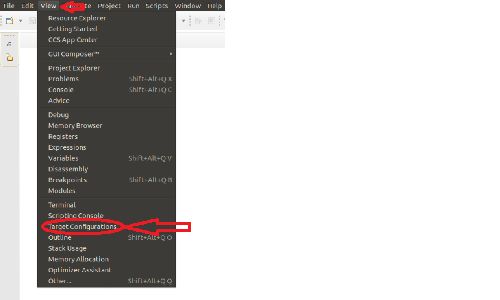
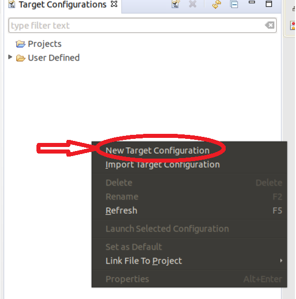
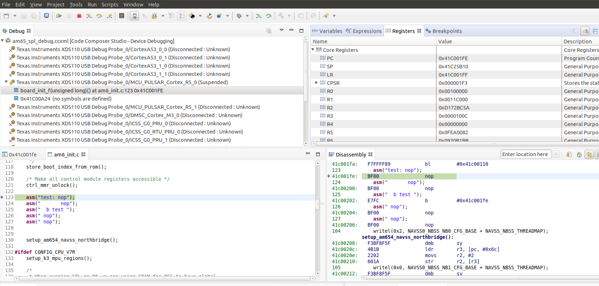
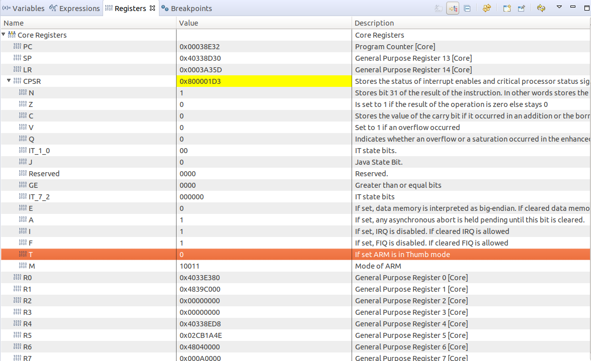
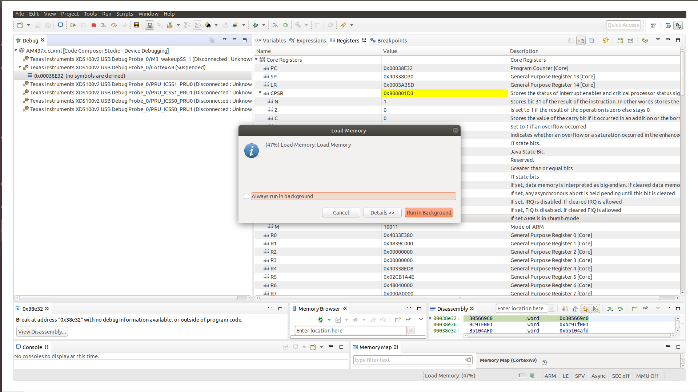
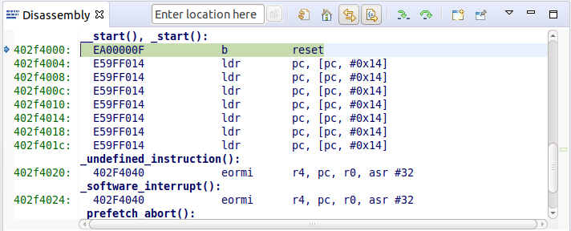
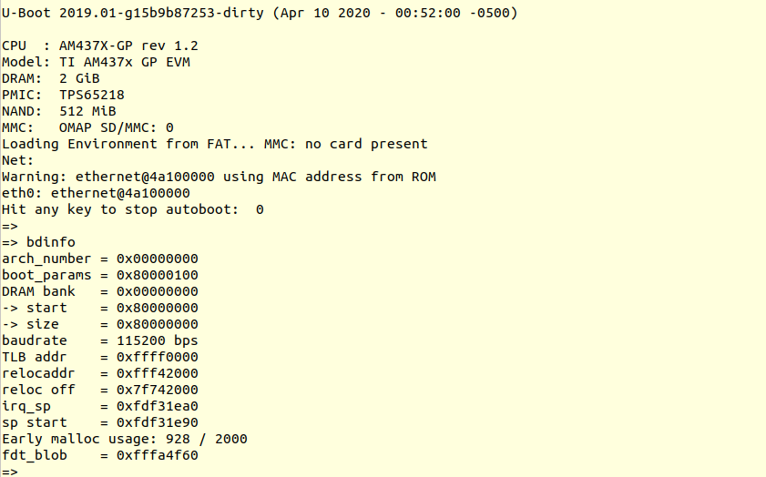

3.1. U-Boot¶
3.1.1. U-Boot User’s Guide¶
3.1.1.1. Overview¶
This document covers the general use of Linux Core Release of U-Boot on following platforms:
32-bit platforms
64-bit platforms
3.1.1.2. General Information¶
3.1.1.2.1. Getting the U-Boot Source Code¶
3.1.1.2.2. Build and Boot Flow on 32-bit platforms¶
We strongly recommend the use of separate object directories when building. This is done with O= parameter to make. We also recommend that you use an output directory name that is identical to the configuration target name. That way if you are working with multiple configuration targets it is very easy to know which folder contains the u-boot binaries that you are interested in.
Setting the tool chain path
We strongly recommend using the toolchain that came with the Linux Core release that corresponds to this U-Boot release. For e.g:
export PATH=$HOME/<TOOLCHAIN_PATH>/bin:$PATH
Cleaning the Sources
If you did not use a separate object directory:
$ make CROSS_COMPILE=arm-linux-gnueabihf- distclean
If you used ‘O=am335x_evm’ as your object directory:
$ rm -rf ./am335x_evm
Compiling MLO and u-boot
Building of both u-boot and SPL is done at the same time. You must however first configure the build for the board you are working with. Use the following table to determine what defconfig to use to configure with:
| Board | SD Boot | eMMC Boot | NAND Boot | UART Boot | Ethernet Boot | USB Ethernet Boot | USB Host Boot | SPI Boot |
|---|---|---|---|---|---|---|---|---|
| AM335x GP EVM | am335x_evm_defconfig | am335x_evm_defconfig | am335x_evm_defconfig | am335x_evm_defconfig | am335x_evm_defconfig | |||
| AM335x EVM-SK | am335x_evm_defconfig | am335x_evm_defconfig | am335x_evm_defconfig | |||||
| AM335x ICE | am335x_evm_defconfig | am335x_evm_defconfig | ||||||
| BeagleBone Black | am335x_evm_defconfig | am335x_evm_defconfig | am335x_evm_defconfig | |||||
| BeagleBone White | am335x_evm_defconfig | am335x_evm_defconfig | ||||||
| AM437x GP EVM | am43xx_evm_defconfig | am43xx_evm_defconfig | am43xx_evm_defconfig | am43xx_evm_defconfig | am43xx_evm_defconfig | am43xx_evm_usbhost_boot_defconfig | ||
| AM437x EVM-Sk | am43xx_evm_defconfig | am43xx_evm_usbhost_boot_defconfig | ||||||
| AM437x IDK | am43xx_evm_defconfig | am43xx_evm_qspiboot_defconfig (XIP) | ||||||
| AM437x ePOS EVM | am43xx_evm_defconfig | am43xx_evm_defconfig | am43xx_evm_usbhost_boot_defconfig | |||||
| AM572x GP EVM | am57xx_evm_defconfig | am57xx_evm_defconfig | ||||||
| AM572x IDK | am57xx_evm_defconfig | |||||||
| AM571x IDK | am57xx_evm_defconfig | |||||||
| DRA74x/DRA72x/DRA71x EVM | dra7xx_evm_defconfig | dra7xx_evm_defconfig | dra7xx_evm_defconfig (DRA71x EVM only) | dra7xx_evm_defconfig(QSPI) | ||||
| K2HK EVM | k2hk_evm_defconfig | k2hk_evm_defconfig | k2hk_evm_defconfig | k2hk_evm_defconfig | ||||
| K2L EVM | k2l_evm_defconfig | k2l_evm_defconfig | k2l_evm_defconfig | |||||
| K2E EVM | k2e_evm_defconfig | k2e_evm_defconfig | k2e_evm_defconfig | |||||
| K2G GP EVM | k2g_evm_defconfig | k2g_evm_defconfig | k2g_evm_defconfig | k2g_evm_defconfig | ||||
| K2G ICE | k2g_evm_defconfig | |||||||
| OMAP-L138 LCDK | omapl138_lcdk_defconfig | omapl138_lcdk_defconfig |
Then:
# Use 'am335x_evm' and 'AM335x GP EVM' in this example
$ make CROSS_COMPILE=arm-linux-gnueabihf- O=am335x_evm am335x_evm_defconfig
$ make CROSS_COMPILE=arm-linux-gnueabihf- O=am335x_evm
Note that not all possible build targets for a given platform are listed here as the community has additional build targets that are not supported by TI. To find these read the ‘boards.cfg’ file and look for the build target listed above. And please note that the main config file will leverage other files under include/configs, as seen by #include statements.
Boot Flow
Booting the Linux kernel on an embedded platform is not as simple as simply pointing a program counter to the kernel location and letting the processor run. This section will review the four bootloader software stages that must be run before the kernel can be booted and run on the device.
Application processors such as the the AM335x are complex pieces of hardware, but have limited internal RAM (e.g., 128KB). Because of this limited amount of RAM, multiple bootloader stages are needed. These bootloader stages systematically unlock the full functionality of the device so that all complexities of the device are available to the kernel.
There are four distinct bootloader stages:
- ROM Code
The first stage bootloader is housed in ROM on the device. The ROM code is the first block of code that is automatically run on device start-up or after power-on reset (POR). The ROM bootloader code is hardcoded into the device and cannot be changed by the user. Because of this, it is important to get an understanding of what exactly the ROM code is doing.
The ROM code has two main functions:
- Configuration of the device and initialization of primary peripherals such as stack setup, configuring the Watchdog Timer (see TRM for details) as well as the PLL and system clocks configuration
- Readies the device for next bootloader by checking boot sources for next stage of bootloader (SPL) as well as loading the actual next stage bootloader code into memory and starting it
The list of booting devices that the ROM code will search through for the second stage bootloader is configured by the voltage levels set on the devices SYSBOOT pins on startup. These pins also set other boot parameters (i.e. expected crystal frequency, bus width of external memory). For more information on the SYSBOOT pins and associated boot parameters see the device TRM.
- SPL or MLO
The second stage bootloader is known as the SPL (Secondary Program Loader), but is sometimes referred to as the MLO (MMC Card Loader). The SPL is the first stage of U-Boot, and must be loaded from one of the boot sources into internal RAM. The SPL has very limited configuration or user interaction, and mainly serves to initialize the external DDR memory and set-up the boot process for the next bootloader stage: U-Boot.
- U-Boot
U-Boot allows for powerful command-based control over the kernel boot environment via a serial terminal. The user has control over a number of parameters such as boot arguments and the kernel boot command. In addition, U-Boot environment variables can be configured. These environment variables are stored in the uEnv.txt file on your storage medium or directly in a Flash-based memory if configured such. These environment variables can be viewed, modified, and saved using the env print, env set, and env save commands, respectively. U-Boot is also a very useful tool to program and manipulate a wide range of external memory devices as well as a helpful aid during custom board bringup.
- Linux Kernel
zImage is the compressed kernel image wrapped with header info that describes the kernel. This header includes the target architecture, the operating system, kernel size, entry points, etc. The loading of the kernel image is typically performed through the use of scripts stored in the U-Boot environment (all starting with the bootcmd ENV variable that gets executed after the autoboot countdown expires or manually by entering the boot command at the U-Boot prompt). This also involves passing a board- specific device tree blob (DTB) as an argument to U-Boot’s bootz command that will extract and start the actual kernel.
3.1.1.2.3. Build and Boot Flow on 64-bit platforms (based on K3 architecture)¶
Several prebuilt images are required from the TI Processor SDK for building U-Boot on K3 based platforms. Go here to download and install the SDK.
TI-u-boot is included in the SDK in <path to tisdk>/board-support. Ensure that the u-boot version matches the release-specific-build-information-u-boot.
Setting the tool chain path
We strongly recommend using the toolchain that came with the Linux Core release that corresponds to this U-Boot release. For e.g:
export PATH=$HOME/gcc-arm-8.3-2019.03-x86_64-arm-linux-gnueabihf/bin:$PATH
export PATH=$HOME/gcc-arm-8.3-2019.03-x86_64-aarch64-linux-gnu/bin:$PATH
Compiling R5 and ARM64 images
Use the following table to determine what defconfig to use to configure with:
| Board | SD/eMMC Boot | UART boot | OSPI boot | Hyper Flash | USB DFU |
|---|---|---|---|---|---|
| AM65x EVM/IDK | am65x_evm_r5_defconfig am65x_evm_a53_defconfig | am65x_evm_r5_defconfig am65x_evm_a53_defconfig | am65x_evm_r5_defconfig am65x_evm_a53_defconfig | ||
| J721E EVM | j721e_evm_r5_defconfig j721e_evm_a72_defconfig | j721e_evm_r5_defconfig j721e_evm_a72_defconfig | j721e_evm_r5_defconfig j721e_evm_a72_defconfig | j721e_evm_r5_defconfig j721e_evm_a72_defconfig | j721e_evm_r5_defconfig j721e_evm_a72_defconfig |
| J7200 EVM | j7200_evm_r5_defconfig j7200_evm_a72_defconfig | j7200_evm_r5_defconfig j7200_evm_a72_defconfig |
Building Bootloader for AM65x EVM/IDK
R5
$ make ARCH=arm CROSS_COMPILE=arm-linux-gnueabihf- am65x_evm_r5_defconfig O=<output directory>/r5
$ make ARCH=arm CROSS_COMPILE=arm-linux-gnueabihf- O=<output directory>/r5
A53
$ make ARCH=arm CROSS_COMPILE=aarch64-linux-gnu- am65x_evm_a53_defconfig O=<output directory>/a53
$ make ARCH=arm CROSS_COMPILE=aarch64-linux-gnu- ATF=<path to tisdk>/board-support/prebuilt-images/bl31.bin TEE=<path to tisdk>/board-support/prebuilt-images/bl32.bin O=<output directory>/a53
Building Bootloader for J721E EVM
R5
$ make ARCH=arm CROSS_COMPILE=arm-linux-gnueabihf- j721e_evm_r5_defconfig O=<output directory>/r5
$ make ARCH=arm CROSS_COMPILE=arm-linux-gnueabihf- O=<output directory>/r5
A72
$ make ARCH=arm CROSS_COMPILE=aarch64-linux-gnu- j721e_evm_a72_defconfig O=<output directory>/a53
$ make ARCH=arm CROSS_COMPILE=aarch64-linux-gnu- ATF=<path to tisdk>/board-support/prebuilt-images/bl31.bin TEE=<path to tisdk>/board-support/prebuilt-images/bl32.bin DM=<path to tisdk>/board-support/prebuilt-images/ipc_echo_testb_mcu1_0_release_strip.xer5f O=<output directory>/a72
Building bootloader for J7200 EVM
R5
$ make ARCH=arm CROSS_COMPILE=arm-linux-gnueabihf- j7200_evm_r5_defconfig O=<output directory>/r5
$ make ARCH=arm CROSS_COMPILE=arm-linux-gnueabihf- O=<output directory>/r5
A72
$ make ARCH=arm CROSS_COMPILE=aarch64-linux-gnu- j7200_evm_a72_defconfig O=<output directory>/a53
$ make ARCH=arm CROSS_COMPILE=aarch64-linux-gnu- ATF=<path to tisdk>/board-support/prebuilt-images/bl31.bin TEE=<path to tisdk>/board-support/prebuilt-images/bl32.bin DM=<path to tisdk>/board-support/prebuilt-images/ipc_echo_testb_mcu1_0_release_strip.xer5f O=<output directory>/a72
$ cd <path to K3-image-gen project>
$ make ARCH=arm CROSS_COMPILE=aarch64-linux-gnu- SOC=j7200 ROM_COMBINED_IMAGE=1 SBL=<path to tisdk>/board-support/prebuilt-images>/u-boot-spl.bin
Dependent Project location
- K3-image-gen (For generating tiboot3.bin and sysfw.itb) project is located here
- Linux Firmware (for device specific ti-dm and ti-sysfw binaries) project is located here
Target Images
Copy the below images to the boot partition of an SD card and boot. Instructions to format the SD card can be found here.
AM65x
- tiboot3.bin from <output directory>/r5
- tispl.bin, u-boot.img from <output directory>/a53
- sysfw.itb from <path to tisdk>/board-support/prebuilt-images/
J721E
- tiboot3.bin from <output directory>/r5
- tispl.bin, u-boot.img from <output directory>/a72
- sysfw.itb from <path to tisdk>/board-support/prebuilt-images/
J7200
- tiboot3.bin from <path to K3-image-gen> (This is combined image of tiboot3.bin and sysfw.itb)
- tispl.bin, u-boot.img from <output directory>/a72
Image Formats
- tiboot3.bin
+-----------------------+
| X.509 |
| Certificate |
| +-------------------+ |
| | | |
| | R5 | |
| | u-boot-spl.bin | |
| | | |
| +-------------------+ |
| | | |
| | FIT header | |
| | +---------------+ | |
| | | | | |
| | | DTB 1...N | | |
| | +---------------+ | |
| +-------------------+ |
+-----------------------+
- tispl.bin
+-----------------------+
| |
| FIT HEADER |
| +-------------------+ |
| | | |
| | ARM64 ATF | |
| +-------------------+ |
| | | |
| | ARM64 OPTEE | |
| +-------------------+ |
| | | |
| | ARM64 SPL | |
| +-------------------+ |
| | | |
| | SPL DTB 1...N | |
| +-------------------+ |
+-----------------------+
- sysfw.itb
+-----------------------+
| |
| FIT HEADER |
| +-------------------+ |
| | | |
| | sysfw.bin | |
| +-------------------+ |
| | | |
| | board config | |
| +-------------------+ |
| | | |
| | PM config | |
| +-------------------+ |
| | | |
| | RM config | |
| +-------------------+ |
| | | |
| | Secure config | |
| +-------------------+ |
+-----------------------+
Boot Flow
On K3 architecture based devices, ROM supports boot only via MCU(R5). This means that bootloader has to run on R5 core. In order to meet this constraint, keeping safety in picture and to have faster boot time, the software boot architecture is designed as below:
+------------------------------------------------------------------------+
| DMSC | R5 | ARM64 |
+------------------------------------------------------------------------+
| +--------+ | | |
| | Reset | | | |
| +--------+ | | |
| : | | |
| +--------+ | +-----------+ | |
| | *ROM* |----------|-->| Reset rls | | |
| +--------+ | +-----------+ | |
| | | | : | |
| | ROM | | : | |
| |services| | : | |
| | | | +-------------+ | |
| | | | | *R5 ROM* | | |
| | | | +-------------+ | |
| | |<---------|---|Load and auth| | |
| | | | | tiboot3.bin | | |
| | | | +-------------+ | |
| | | | : | |
| | | | : | |
| | | | : | |
| | | | +-------------+ | |
| | | | | *R5 SPL* | | |
| | | | +-------------+ | |
| | | | | Load | | |
| | | | | sysfw.itb | | |
| | Start | | +-------------+ | |
| | System |<---------|---| Start | | |
| |Firmware| | | SYSFW | | |
| +--------+ | +-------------+ | |
| : | | | | |
| +---------+ | | Load | | |
| | *SYSFW* | | | system | | |
| +---------+ | | Config data | | |
| | |<--------|---| | | |
| | | | +-------------+ | |
| | | | | | | |
| | | | | DDR | | |
| | | | | config | | |
| | | | +-------------+ | |
| | | | | | | |
| | |<--------|---| Start A53 | | |
| | | | | and Reset | | |
| | | | +-------------+ | |
| | | | | +-----------+ |
| | |---------|-----------------------|---->| Reset rls | |
| | | | | +-----------+ |
| | DMSC | | | : |
| |Services | | | +-----------+ |
| | |<--------|-----------------------|---->|*ATF/OPTEE*| |
| | | | | +-----------+ |
| | | | | : |
| | | | | +-----------+ |
| | |<--------|-----------------------|---->| *A53 SPL* | |
| | | | | +-----------+ |
| | | | | | Load | |
| | | | | | u-boot.img| |
| | | | | +-----------+ |
| | | | | : |
| | | | | +-----------+ |
| | |<--------|-----------------------|---->| *U-Boot* | |
| | | | | +-----------+ |
| | | | | | prompt | |
| | | | | +-----------+ |
| +---------+ | | |
| | | |
+------------------------------------------------------------------------+
Here DMSC acts as master and provides all the critical services. R5/ARM64 requests DMSC to get these services done as shown in the above diagram.
3.1.1.2.4. U-Boot Environment¶
Please note that on many boards we modify the environment during system start for a variety of variables such as board_name and if unset, ethaddr. When we restore defaults some variables will become unset, and this can lead to other things not working such as findfdt that rely on these run-time set variables.
Restoring defaults
It is possible to reset the set of U-Boot environment variables to their defaults and if desired, save them to where the environment is stored, if applicable. It is also required to restore the default setting when u-boot version changes from an upgrade or downgrade. To do so, issue the following commands:
U-Boot # env default -f -a
U-Boot # saveenv
Networking Environment
When using a USB-Ethernet dongle a valid MAC address must be set in the environment. To create a valid address please read **this page**. Then issue the following command:
U-Boot # setenv usbethaddr value:from:link:above
You can use the printenv command to see if usbethaddr is already set.
Then start the USB subsystem:
U-Boot # usb start
The default behavior of U-Boot is to utilize all information that a DHCP server passes to us when the user issues the dhcp command. This will include the dhcp parameter next-server which indicates where to fetch files from via TFTP. There may be times however where the dhcp server on your network provides incorrect information and you are unable to modify the server. In this case the following steps can be helpful:
U-Boot # setenv autoload no
U-Boot # dhcp
U-Boot # setenv serverip correct.server.ip
U-Boot # tftp
Another alternative is to utilize the full syntax of the tftp command:
U-Boot # setenv autoload no
U-Boot # dhcp
U-Boot # tftp ${loadaddr} server.ip:fileName
3.1.1.2.5. Available RAM for image download¶
To know the amount of RAM available for downloading images or for other
usage, use bdinfo command.
=> bdinfo
arch_number = 0x00000000
boot_params = 0x80000100
DRAM bank = 0x00000000
-> start = 0x80000000
-> size = 0x7F000000
baudrate = 115200 bps
TLB addr = 0xFEFF0000
relocaddr = 0xFEF30000
reloc off = 0x7E730000
irq_sp = 0xFCEF8880
sp start = 0xFCEF8870
Early malloc usage: 890 / 2000
After booting, U-Boot relocates itself (along with its various reserved
RAM areas) and places itself at end of available RAM (starting at
relocaddr in bdinfo output above). Only the stack is located
just before that area. The address of top of the stack is in
sp start in bdinfo output and it grows downwards. Users should
reserve at least about 1MB for stack, so in the example output above,
RAM in the range of [0x80000000, 0xFCE00000] is safely available for
use.
3.1.1.2.6. Device Trees¶
A note about device trees. Now all supported boards are required to use a device tree to boot. To facilitate this in supported platforms, a command in U-Boot environment findfdt is available that will set the fdtfile variable to the name of the device tree to use, as found with the kernel sources. In the Keystone-2 family devices (K2H/K/E/L/G), it is specified by name_fdt variable for each platform. The device tree is expected to be loaded from the same media as the kernel, and from the same relative path.
3.1.1.3. USB Device Firmware Upgrade (DFU)¶
When working with USB Device Firmware Upgrade (DFU), regardless of the medium to be written to and of the board being used, there are some general things to keep in mind. First of all, you will need to get a copy of the dfu-util program installed on your host. If your distribution does not provide this package you will need to build it from source. Second, the examples that follow assume a single board is plugged into the host PC. If you have more than one device plugged in you will need to use the options that dfu-util provides for specifying a single device to work with. Finally, to program via DFU for a given storage device see the section for the storage device you are working with.
3.1.1.3.1. USB Peripheral boot mode (SPL-DFU support)¶
The USB Peripheral boot mode is used to boot using USB interface using SPL-DFU feature. Steps outlined here can be used on platform that support USB Peripheral boot mode.
- Enable the SPL-DFU feature in u-boot and build MLO/u-boot binaries.
- Load the MLO and u-boot.img using the dfu-util from host PC.
- Once the u-boot is up, use DFU command from u-boot to flash the binary images from Host PC (using dfu-utils tool) to the eMMC, or QSPI to fresh/factory boards.
- Example provided here is for dra7xx platform.
- Use default “dra7xx_evm_defconfig” to build spl/u-boot-spl.bin, u-boot.img.
host$ make dra7xx_evm_defconfig
host$ make menuconfig
select SPL/DFU support
menuconfig->SPL/TPL--->
..
[*] Support booting from RAM
[*] Support USB Gadget drivers
[ ] Support USB Ethernet drivers
[*] Support DFU (Device Firmware Upgrade)
DFU device selection (RAM device) -->
Unselect CONFIG_HUSH_PARSER
menuconfig--->Command Line interface
[*] Support U-boot commands
[ ] Use hush shell
- Build spl/u-boot-spl.bin and u-boot.img
host$ make
USB Peripheral boot mode on J721E EVM (SPL-DFU boot mode)
- Set SYSBOOT switches to USB Peripheral boot mode (Refer to Initialization chapter of J721E TRM for boot switch details)
- Make sure USB0 port in UFP/DRP mode: SW3[3:4] = 01 or 1x
- Connect EVM’s TypeC port (USB0 port) to PC through USB cable
- Power on the board
On host side:
host$ sudo dfu-util -l
This will show the following DFU entities:
Found DFU: [0451:6163] ver=0200, devnum=50, cfg=1, intf=0, path="3-2", alt=1, name="SocId", serial="01.00.00.00"
Found DFU: [0451:6163] ver=0200, devnum=50, cfg=1, intf=0, path="3-2", alt=0, name="bootloader", serial="01.00.00.00"
Send boot images in this order: tiboot3.bin -> sysfw.itb -> tispl.bin -> u-boot.img.
host$ sudo dfu-util -R -a bootloader -D tiboot3.bin
host$ sudo dfu-util -l
Found DFU: [0451:6163] ver=0224, devnum=51, cfg=1, intf=0, path="3-2", alt=0, name="sysfw.itb", serial="UNKNOWN"
host$ sudo dfu-util -R -a sysfw.itb -D sysfw.itb
host$ sudo dfu-util -l
Found DFU: [0451:6163] ver=0224, devnum=52, cfg=1, intf=0, path="3-2", alt=1, name="u-boot.img", serial="UNKNOWN"
Found DFU: [0451:6163] ver=0224, devnum=52, cfg=1, intf=0, path="3-2", alt=0, name="tispl.bin", serial="UNKNOWN"
host$ sudo dfu-util -R -a tispl.bin -D tispl.bin
host$ sudo dfu-util -R -a u-boot.img -D u-boot.img
At this point, the board should boot to the U-Boot prompt.
Note
This mode is not supported on J721E Rev E2 and earlier boards.
3.1.1.4. Network (Wired or USB Client)¶
This section documents how to configure the network and use it to load files and then boot the Linux Kernel using a root filesystem mounted over NFS. At this time, no special builds of U-Boot are required to perform these operations on the supported hardware.
3.1.1.4.1. Booting U-Boot from the network¶
In some cases we support loading SPL and U-Boot over the network because of ROM support. In some cases, a special build of U-Boot may be required. In addition, the DHCP server is needed to reply to the target with the file to fetch via tftp. In order to facilitate this, the vendor-class-identifier DHCP field is filled out by the ROM and the values are listed in the table below. Finally, you will need to use the spl/u-boot-spl.bin and u-boot.img files to boot.
Note
Booting U-Boot/SPL from network is supported only on the following platforms.
| Board | make target | Supported interfaces | ROM vendor-class-identifier value | SPL vendor-class-identifier value |
|---|---|---|---|---|
| AM335x GP EVM | am335x_evm | CPSW ethernet | DM814x ROM (PG1.0) or AM335x ROM (PG2.0 and later) | AM335x U-Boot SPL |
| AM335x GP EVM (PG2.0 and later) | am335x_evm | SPL and U-Boot via USB RNDIS | AM335x ROM | AM335x U-Boot SPL |
| AM335x GP EVM (PG1.0) | am335x_evm | SPL via UART, U-Boot via USB RNDIS | N/A | AM335x U-Boot SPL |
| AM43xx EVM | am43xx_evm | CPSW ethernet | AM43xx ROM | AM43xx U-Boot SPL |
| AM43xx EVM (PG1.2 and later) | am43xx_evm | SPL and U-Boot via USB RNDIS | AM43xx ROM | AM43xx U-Boot SPL |
If using ISC dhcpd an example host entry would look like this:
host am335x_evm {
hardware ethernet de:ad:be:ee:ee:ef;
# Check for PG1.0, typically CPSW
if substring (option vendor-class-identifier, 0, 10) = "DM814x ROM" {
filename "u-boot-spl.bin";
# Check for PG2.0, CPSW or USB RNDIS
} elsif substring (option vendor-class-identifier, 0, 10) = "AM335x ROM" {
filename "u-boot-spl.bin";
} elsif substring (option vendor-class-identifier, 0, 17) = "AM335x U-Boot SPL" {
filename "u-boot.img";
} else {
filename "zImage-am335x-evm.bin";
}
}
Note that in a factory type setting, the substring tests can be done inside of the subnet declaration to set the default filename value for the subnet, and overriden (if needed) in a host entry.
If you have removed NetworkManager from your system (which is not the default in most distributions) you need to configure your /etc/network/interfaces file thusly:
allow-hotplug usb0
iface usb0 inet static
address 192.168.1.1
netmask 255.255.255.0
post-up service isc-dhcp-server reload
If you are using NetworkManager you need to create two files. First, as root create /etc/NetworkManager/system-connections/AM335x USB RNDIS (and use \ to escape the space) with the following content:
[802-3-ethernet]
duplex=full
mac-address=AA:BB:CC:11:22:33
[connection]
id=AM335X USB RNDIS
uuid=INSERT THE CONTENTS OF 'uuidgen' HERE
type=802-3-ethernet
[ipv6]
method=ignore
[ipv4]
method=manual
addresses1=192.168.1.1;16;
Seccond as root, and ensuring execute permissions, create /etc/NetworkManager/dispatcher.d/99am335x-dhcp-server
#!/bin/sh
IF=$1
STATUS=$2
if [ "$IF" = "usb0" ] && [ "$STATUS" = "up" ]; then
service isc-dhcp-server reload
fi
A walk through of these steps can be seen at Ubuntu 12.04 Set Up to Network Boot an AM335x Based Platform.
3.1.1.4.2. Multiple Interfaces¶
On some boards, for example when we have both a wired interface and USB RNDIS gadget ethernet, it can be desirable to change from the default U-Boot behavior of cycling over each interface it knows to telling U-Boot to use a single interface. For example, on start you may see lines like:
Net: cpsw, usb_ether
So to ensure that we use usb_ether first issue the following command:
U-Boot # setenv ethact usb_ether
3.1.1.4.3. Network configuration via DHCP¶
To configure the network via DHCP, use the following commands:
U-Boot # setenv autoload no
U-Boot # dhcp
And ensure that a DHCP server is configured to serve addresses for the network you are connected to.
3.1.1.4.4. Manual network configuration¶
To configure the network manually, the ipaddr, serverip, gatewayip and netmask:
U-Boot # setenv ipaddr 192.168.1.2
U-Boot # setenv serverip 192.168.1.1
U-Boot # setenv gatewayip 192.168.1.1
U-Boot # setenv netmask 255.255.255.0
3.1.1.4.5. Disabling Gigabit Phy Advertising¶
On some boards like DRA72x Rev B or earlier, there is an issue like ethernet doesn’t connect to 1Gbps switch. This issue is due to the use of an old ti phy with history of bad behaviour, due to this several J6 EVMs have been marked 100M only. So here is the U-Boot command to disable phy’s 1Gbps support and connect as 100Mbps max capable.
=> mii modify 0x3 0x9 0x0 0x300 /* Disable Gigabit advertising */
=> mii modify 0x3 0x0 0x0 0x1000 /* Disable Auto Negotiation */
=> mii modify 0x3 0x0 0x1000 0x1000 /* Enable Auto Negotiation */
3.1.1.4.6. Booting Linux from the network¶
Within the default environment for each board that supports networking there is a boot command called netboot in AM EVMs and boot=net in KS2 EVMs that will automatically load the kernel and boot. For the exact details of each use printenv on the netboot variable and then in turn printenv other sub-sections of the command. The most important variables in AM57x/DRA7x are rootpath and nfsopts, and tftp_root and nfs_root in K2H/K/E/L/G.
On AM65x GP and IDK boards, Linux kernel can be booted over PRU-ICSSG Ethernet port as well. In the release u-boot image, only first port (MII port 0) of ICSSG0, ICSSG1 and ICSSG2 are enabled. To use second port (MII port 1), user needs to edit the DTS file to enable second port instead of first port and rebuild u-boot images using the updated DTS file. First port is marked as Eth0 on base board (ICSSG2), Eth0 (ICSSG0) and Eth2 (ICSSG1) on IDK Application board. User needs to load and run pru/rtu firmware on ICSSG using env script as shown below before doing network operations such as dhcp, tftp over ICSSG ports. The firmware is loaded from the rootfs/lib/firmware/ti-pruss/ folder for this purpose. For more information on using rproc/RemoteProc in Uboot, see section here. A sample U-Boot env script for AM65x EVM/IDK is shown below for ICSSG0, ICSSG1 and ICSSG2. User needs to customize the serverip and bootdir env variable to that of the tftp server used in the setup.
Note
Currently only 100Mbps and 1Gbps Full Duplex (FD) links are supported for ICSSG ports. Linux Kernel boot with NFS rootfs over PRUETH Ethernet interface has not been validated.
ICSSG0 port 0
setenv start_icssg0 'rproc start 2; rproc start 3'
setenv stop_icssg0 'rproc stop 2; rproc stop 3'
setenv firmware_dir '/lib/firmware/ti-pruss'
setenv get_fdt_net 'run start_icssg0; tftp ${fdtaddr} ${serverip}:${bootdir}/${name_fdt}; run stop_icssg0'
setenv get_kern_net 'run start_icssg0; tftp ${loadaddr} ${serverip}:${bootdir}/${name_kern}; run stop_icssg0'
setenv get_overlay_net 'fdt address ${fdtaddr};fdt resize 0x0fffff;for overlay in $overlay_files;do; run start_icssg0; \
tftp ${overlayaddr} ${bootdir}/${overlay};fdt apply ${overlayaddr}; run stop_icssg0; done;'
setenv get_firmware_mmc 'load mmc ${bootpart} ${loadaddr} ${firmware_dir}/${firmware_file}'
setenv serverip 158.218.113.14
setenv bootdir 06.02.00.58-am6
setenv name_fdt k3-am654-base-board.dtb
setenv name_kern Image-am65xx-evm.bin
setenv overlay_files 'k3-am654-idk.dtbo k3-am654-pcie-usb2.dtbo'
setenv init_icssg0 'setenv ethact pruss0_eth; setenv autoload no; rproc init; setenv loadaddr 0x80000000; \
setenv firmware_file 'am65x-pru0-prueth-fw.elf'; run get_firmware_mmc; rproc load 2 0x80000000 13040; rproc start 2; \
setenv loadaddr 0x89000000; setenv firmware_file am65x-rtu0-prueth-fw.elf; run get_firmware_mmc; rproc load 3 0x89000000 5676; \
rproc start 3; dhcp; run stop_icssg0;'
setenv bootcmd 'run init_mmc; run init_icssg0; run get_kern_net; run get_fdt_net ; run get_overlay_net ; run run_kern'
saveenv
boot
ICSSG1 port 0
setenv start_icssg1 'rproc start 6; rproc start 7'
setenv stop_icssg1 'rproc stop 6; rproc stop 7'
setenv firmware_dir '/lib/firmware/ti-pruss'
setenv get_fdt_net 'run start_icssg1; tftp ${fdtaddr} ${serverip}:${bootdir}/${name_fdt}; run stop_icssg1'
setenv get_kern_net 'run start_icssg1; tftp ${loadaddr} ${serverip}:${bootdir}/${name_kern}; run stop_icssg1'
setenv get_overlay_net 'fdt address ${fdtaddr};fdt resize 0x0fffff;for overlay in $overlay_files;do; run start_icssg1; \
tftp ${overlayaddr} ${bootdir}/${overlay};fdt apply ${overlayaddr}; run stop_icssg1; done;'
setenv get_firmware_mmc 'load mmc ${bootpart} ${loadaddr} ${firmware_dir}/${firmware_file}'
setenv serverip 158.218.113.14
setenv bootdir 06.02.00.58-am6
setenv name_fdt k3-am654-base-board.dtb
setenv name_kern Image-am65xx-evm.bin
setenv overlay_files 'k3-am654-idk.dtbo k3-am654-pcie-usb2.dtbo'
setenv init_icssg1 'setenv ethact pruss1_eth; setenv autoload no; rproc init; setenv loadaddr 0x80000000; \
setenv firmware_file 'am65x-pru0-prueth-fw.elf'; run get_firmware_mmc; rproc load 6 0x80000000 13040; rproc start 6; \
setenv loadaddr 0x89000000; setenv firmware_file am65x-rtu0-prueth-fw.elf; run get_firmware_mmc; rproc load 7 0x89000000 5676; \
rproc start 7; dhcp; run stop_icssg1;'
setenv bootcmd 'run init_mmc; run init_icssg1; run get_kern_net; run get_fdt_net ; run get_overlay_net ; run run_kern'
saveenv
boot
ICSSG2 port 0
setenv start_icssg2 'rproc start 10; rproc start 11'
setenv stop_icssg2 'rproc stop 10; rproc stop 11'
setenv firmware_dir '/lib/firmware/ti-pruss'
setenv get_fdt_net 'run start_icssg2; tftp ${fdtaddr} ${serverip}:${bootdir}/${name_fdt}; run stop_icssg2'
setenv get_kern_net 'run start_icssg2; tftp ${loadaddr} ${serverip}:${bootdir}/${name_kern}; run stop_icssg2'
setenv get_overlay_net 'fdt address ${fdtaddr};fdt resize 0x0fffff;for overlay in $overlay_files;do; run start_icssg2; \
tftp ${overlayaddr} ${bootdir}/${overlay};fdt apply ${overlayaddr}; run stop_icssg2; done;'
setenv get_firmware_mmc 'load mmc ${bootpart} ${loadaddr} ${firmware_dir}/${firmware_file}'
setenv serverip 158.218.113.14
setenv bootdir 06.02.00.58-am6
setenv name_fdt k3-am654-base-board.dtb
setenv name_kern Image-am65xx-evm.bin
setenv overlay_files 'k3-am654-idk.dtbo k3-am654-pcie-usb2.dtbo'
setenv init_icssg2 'setenv ethact pruss2_eth; setenv autoload no; rproc init; setenv loadaddr 0x80000000; \
setenv firmware_file 'am65x-pru0-prueth-fw.elf'; run get_firmware_mmc; rproc load 10 0x80000000 13040; rproc start 10; \
setenv loadaddr 0x89000000; setenv firmware_file am65x-rtu0-prueth-fw.elf; run get_firmware_mmc; rproc load 11 0x89000000 5676; \
rproc start 11; dhcp; run stop_icssg2;'
setenv bootcmd 'run init_mmc; run init_icssg2; run get_kern_net; run get_fdt_net ; run get_overlay_net ; run run_kern'
saveenv
boot
Note
To boot over second port (MII port 1) of ICSSG2, user needs to edit arch/arm/dts/k3-am654-base-board-u-boot.dtsi in the U-Boot source tree. See DTS file for instruction. For example, user needs to comment pruss2_emac0 DT node and uncomment pruss2_emac1 node. Similarly to enable second port for ICSSG0 and ICSSG1, user needs to edit arch/arm/dts/k3-am654-idk.dtso and enable pruss0_emac1 and pruss1_emac1 nodes respectives. After this rebuild u-boot images and use it. Port 1 is marked as by Eth1 on on base board (ICSSG2), Eth1 (ICSSG0) and Eth3 (ICSSG1) on IDK Application board.
3.1.1.5. NAND¶
Note
NAND is not supported on J721E platform.
This section documents how to write files to the NAND device and use it to load and then boot the Linux Kernel using a root filesystem also found on NAND.
3.1.1.5.1. Erasing, Reading and Writing to/from NAND partitions¶
Listing NAND partitions
Below command is used to see the list of mtd devices enabled in U-boot
mtdparts
Example output on DRA71x EVM:
device nand0 <nand.0>, # parts = 10
#: name size offset mask_flags
0: NAND.SPL 0x00020000 0x00000000 0
1: NAND.SPL.backup1 0x00020000 0x00020000 0
2: NAND.SPL.backup2 0x00020000 0x00040000 0
3: NAND.SPL.backup3 0x00020000 0x00060000 0
4: NAND.u-boot-spl-os 0x00040000 0x00080000 0
5: NAND.u-boot 0x00100000 0x000c0000 0
6: NAND.u-boot-env 0x00020000 0x001c0000 0
7: NAND.u-boot-env.backup10x00020000 0x001e0000 0
8: NAND.kernel 0x00800000 0x00200000 0
9: NAND.file-system 0x0f600000 0x00a00000 0
Note: In later sections the <partition name> symbol should be replaced with the partition name seen when executing the mtdparts command.
Erasing Partition
nand erase.part <partition name>
Writing to Partition
When writing to NAND partition the file to be written must have previously been copied to memory.
nand write <ddr address> <partition name> <file size>
The symbol <ddr address> refers to the location in memory that a file was read into DDR memory. The symbol <file size> represents the amount of bytes (in hex) of the file to write into the NAND partition. Note: When reading a file into DDR, U-boot by default sets the value of environment variable “filesize” to the number of bytes (in hex) that was read via the last read/load command.
U-Boot # mmc dev 0;
U-Boot # setenv devnum 0
U-Boot # setenv devtype mmc
U-Boot # mmc rescan
U-Boot # load ${devtype} 1:2 ${loadaddr} /boot/zImage
Now that zImage is loaded into memory time to write it into the NAND partition
U-Boot # nand erase.part NAND.kernel
U-Boot # nand write ${loadaddr} NAND.kernel ${filesize}
Reading from Partition
nand read <ddr address> <partition name>
The symbol <ddr address> should be replaced with the location in DDR that you want the contents of the NAND partition to be copied to. The symbol <partition name> contains the NAND partition name you want to read from.
3.1.1.5.2. Writing to NAND via DFU¶
Currently in boards that support using DFU, the default build supports writing to NAND, so no custom build is required. To see the list of available places to write to (in DFU terms, altsettings) use the mtdparts command to list the known MTD partitions and printenv dfu_alt_settings to see how they are mapped and exposed to dfu-util.
U-Boot # mtdparts
device nand0 <nand0>, # parts = 8
#: name size offset mask_flags
0: NAND.SPL 0x00020000 0x00000000 0
1: NAND.SPL.backup1 0x00020000 0x00020000 0
2: NAND.SPL.backup2 0x00020000 0x00040000 0
3: NAND.SPL.backup3 0x00020000 0x00060000 0
4: NAND.u-boot 0x001e0000 0x00080000 0
5: NAND.u-boot-env 0x00020000 0x00260000 0
6: NAND.kernel 0x00500000 0x00280000 0
7: NAND.file-system 0x0f880000 0x00780000 0
active partition: nand0,0 - (SPL) 0x00080000 @ 0x00000000
U-Boot # printenv dfu_alt_info_nand
dfu_alt_info=NAND.SPL part 0 1;NAND.SPL.backup1 part 0 2;NAND.SPL.backup2 part 0 3;NAND.SPL.backup3 part 0 4;NAND.u-boot part 0 5;NAND.kernel part 0 7;NAND.file-system part 0 8
This means that you can tell dfu-util to write anything to any of:
- NAND.SPL
- NAND.SPL.backup1
- NAND.SPL.backup2
- NAND.SPL.backup3
- NAND.u-boot
- NAND.kernel
- NAND.file-system
Before writing you must erase at least the area to be written to. Then to start DFU on the target on the first NAND device:
U-Boot # nand erase.chip
U-Boot # setenv dfu_alt_info ${dfu_alt_info_nand}
U-Boot # dfu 0 nand 0
Then on the host PC to write MLO to the first SPL partition:
$ sudo dfu-util -D MLO -a NAND.SPL
3.1.1.5.3. NAND Boot¶
If you want to load and run U-Boot from NAND the first step is insuring that the appropriate U-boot files are loaded in the correct partition. For AM335x, AM437x, DRA7x devices this means writing the file MLO to the NAND’s SPL partition. For OMAP-L138 device, write the .ais image to the NAND’s partition. For all devices this requires writing u-boot.img to the NAND’s U-Boot partition.
Note
The NAND partition of OMAP-L138 is different from other devices, please use the following commands to program the NAND
=> setenv ipaddr <EVM_IPADDR>
=> setenv serverip <TFTP_SERVER_IPADDR>
=> tftp ${loadaddr} ${serverip}:u-boot-omapl138-lcdk.ais
=> print filesize
=> nand erase 0x20000 <hex_len>
=> nand write ${loadaddr} 0x20000 <hex_len>
* hex_len is next sector boundary of the filesize. The sector size is 0x10000.
set dip switch to NAND boot and power cycle the EVM
Once the file(s) have been written to NAND the board should then be powered off. Next evm’s boot switches need to be configured for NAND booting. To understand the appropriate boot switches settings please see the evm’s hardware setup guide.
3.1.1.5.4. Booting Kernel and Filesystem from NAND¶
If a user wants to use NAND as their primary storage then the NAND flash must have individual partitions for all the critical software needed to boot the kernel. At a minimum this includes kernel, dtb, file system. Some SoCs require additional files and firmware which also need to be stored in different NAND partitions.
Similar to booting the kernel from any interface the user must insure that all required files needed for booting are loaded in DDR memory. The only exception is the filesystem which will be loaded by the kernel via the bootargs parameters. Bootargs contains information passed to the kernel including where and how to mount the file system.
The below contains example bootargs used by DRA7x evm for using a ubifs filesystem
setenv bootargs console=${console} ${optargs} root=ubi0:rootfs rw ubi.mtd=NAND.file-system,2048 rootfstype=ubifs rootwait=1
In the above example bootargs, “rootfs” stands for the value specified by in the “vol_name” parameter defined in the ubinize.cfg file. In ubi.mtd “NAND.file-system” and “2048” represents the name of the partition that contains the ubifs and page size. Rootfstype simply tells the kernel what type of file system to use.
By default for our evms properly loading, setting bootargs and booting the kernel is handled by running “run nandboot” in U-boot. Information on creating a UBIFS can be found here.
3.1.1.6. SD, eMMC or USB Storage¶
The commands for using SD cards, eMMC flash and USB mass storage devices (hard drives, flash drives, card readers, etc) are all very similar. The biggest difference is that on some hardware we may not be able to run U-Boot out of ROM from the storage device as it is unsupported. Once U-Boot is running however, any of these may be used for the kernel and the root filesystem.
3.1.1.6.1. Partitioning eMMC from U-Boot¶
The eMMC device typically ships without any partition table. We make use of the GPT support in U-Boot to write a GPT partition table to eMMC. In this case we need to use the uuidgen program on the host to create the UUIDs used for the disk and each partition.
$ uuidgen
...first uuid...
$ uuidgen
...second uuid...
U-Boot # printenv partitions
uuid_disk=${uuid_gpt_disk};name=rootfs,start=2MiB,size=-,uuid=${uuid_gpt_rootfs}
U-Boot # setenv uuid_gpt_disk ...first uuid...
U-Boot # setenv uuid_gpt_rootfs ...second uuid...
U-Boot # gpt write mmc 1 ${partitions}
A reset is required for the partition table to be visible.
3.1.1.6.2. Updating an SD card from a host PC¶
This section assume that you have created an SD card following the instructions on Processor SDK Linux Create SD Card Script or have made a compatible layout by hand. In this case, you will need to copy the all the boot images (MLO and u-boot.img for 32-bit platforms, tiboot3.bin, sysfw.itb, tispl.bin, u-boot.img for K3 based platforms) files to the boot partition. At this point, the card is now bootable in the SD card slot. We default to using /boot/${bootfile} on the rootfs partition and the device tree file loaded from /boot with the same name as in the kernel.
However, if you are using OMAP-L138 based board (like the LCDK), then
you need to write the generated u-boot.ais image to the SD card
using dd command.
$ sudo dd if=u-boot.ais of=/dev/sd<N> seek=117 bs=512 conv=fsync
3.1.1.6.3. Updating an SD card or eMMC using DFU¶
To see the list of available places to write to (in DFU terms, altsettings) use the mmc part command to list the partitions on the MMC device and printenv dfu_alt_settings_mmc or dfu_alt_settings_emmc to see how they are mapped and exposed to dfu-util.
U-Boot# mmc part
Partition Map for MMC device 0 -- Partition Type: DOS
Partition Start Sector Num Sectors Type
1 63 144522 c Boot
2 160650 1847475 83
3 2024190 1815345 83
U-Boot# printenv dfu_alt_info_mmc
dfu_alt_info=boot part 0 1;rootfs part 0 2;MLO fat 0 1;u-boot.img fat 0 1;uEnv.txt fat 0 1"
This means that you can tell dfu-util to write anything to any of:
- boot
- rootfs
- MLO
- u-boot.img
- uEnv.txt
And that the MLO, u-boot.img and uEnv.txt files are to be written to a FAT filesystem.
To start DFU on the target on the first MMC device:
U-Boot # setenv dfu_alt_info ${dfu_alt_info_mmc}
U-Boot # dfu 0 mmc 0
On boards like AM57x GP EVM or BeagleBoard x15, where the second USB instance is used as USB client, the dfu command becomes:
U-Boot # dfu 1 mmc 0
Then on the host PC to write MLO to an existing boot partition:
$ sudo dfu-util -D MLO -a MLO
On the host PC to overwrite the current boot partition contents with a new created on the host FAT filesystem image:
$ sudo dfu-util -D fat.img -a boot
3.1.1.6.4. Updating an SD card or eMMC with RAW writes¶
In some cases it is desirable to write MLO and u-boot.img as raw images to the MMC device rather than in a filesystem. eMMC requires this, for example. In that case, the following is how to program these files and not overwrite the partition table on the device. We assume that the files exist on a SD card. In addition you may wish to write a filesystem image to the device, so an example is also provided.
U-Boot # mmc dev 0
U-Boot # mmc rescan
U-Boot # mmc dev 1
U-Boot # fatload mmc 0 ${loadaddr} MLO
U-Boot # mmc write ${loadaddr} 0x100 0x100
U-Boot # mmc write ${loadaddr} 0x200 0x100
U-Boot # fatload mmc 0 ${loadaddr} u-boot.img
U-Boot # mmc write ${loadaddr} 0x300 0x400
U-Boot # fatload mmc 0 ${loadaddr} rootfs.ext4
U-Boot # mmc write ${loadaddr} 0x1000 ...rootfs.ext4 size in bytes divided by 512, in hex...
3.1.1.6.5. Booting Linux from SD card or eMMC¶
Within the default environment for each board that supports SD/MMC there is a boot command called mmcboot that will set the boot arguments correctly and start the kernel. In this case however, you must first run loaduimagefat or loaduimage to first load the kernel into memory. For the exact details of each use printenv on the mmcboot, loaduimagefat and loaduimage variables and then in turn printenv other sub-sections of the command. The most important variables here are mmcroot and mmcrootfstype.
3.1.1.6.6. Booting MLO and u-boot from eMMC boot partition¶
name: booting-mlo-and-u-boot-from-emmc-boot-partition
The dra7xx and am57xx processors support booting from the eMMC boot partition. The following commands load the boot images from network and write them into the boot0 partition.
U-boot # setenv autoload no
U-boot # dhcp
U-boot # mmc dev 1 1
U-boot # tftp ${loadaddr} dra7xx/MLO
U-boot # mmc write ${loadaddr} 0x0 0x300
U-boot # tftp ${loadaddr} dra7xx/u-boot.img
U-boot # mmc write ${loadaddr} 0x300 0x400
We also need to configure the eMMC using the bootbus and partconf commands. The bootbus command sets the eMMC into dual data rate mode with a bus width of 8 to match with the bus configuration supported by the Boot ROM. The partconf command gives access to the boot0 partition during boot operation. Note that these configurations are limited to boot operation and the eMMC can be set to its highest speed mode once boot operation is complete. All these are non-volatile configurations that need to be done once per eMMC/board .
U-boot # mmc bootbus 1 2 0 2
U-boot # mmc partconf 1 1 1 0
U-boot # mmc rst-function 1 1
3.1.1.6.7. Booting tiboot3.bin, tispl.bin and u-boot.img from eMMC boot partition¶
The K3 based processors support booting from the eMMC boot partition. The following commands can be used to download tiboot3.bin, tispl.bin and u-boot.img from an SD card and write them to the eMMC boot0 partition at respective addresses.
=> mmc dev 0 1
=> fatload mmc 1 ${loadaddr} tiboot3.bin
=> mmc write ${loadaddr} 0x0 0x400
=> fatload mmc 1 ${loadaddr} tispl.bin
=> mmc write ${loadaddr} 0x400 0x1000
=> fatload mmc 1 ${loadaddr} u-boot.img
=> mmc write ${loadaddr} 0x1400 0x2000
=> fatload mmc 1 ${loadaddr} sysfw.itb
=> mmc write ${loadaddr} 0x3600 0x800
To give the ROM access to the boot partition, the following commands must be used for the first time:
=> mmc partconf 0 1 1 1
=> mmc bootbus 0 2 0 0
3.1.1.6.8. Booting Linux from USB storage¶
name: booting-linux-from-usb-storage
To load the Linux Kernel and rootfs from USB rather than SD/MMC card on AMx/DRA7x EVMs, if we assume that the USB device is partitioned the same way as an SD/MMC card is, we can utilize the mmcboot command to boot. To do this, perform the following steps:
U-Boot # usb start
U-Boot # setenv mmcroot /dev/sda2 ro
U-Boot # run mmcargs
U-Boot # run bootcmd_usb
On K2H/K/E/L EVMs, the USB drivers in Kernel needs to be built-in (default modules). The configuration changes are:
CONFIG_USB=y
CONFIG_USB_XHCI_HCD=y
CONFIG_USB_XHCI_PCI=y
CONFIG_USB_XHCI_PLATFORM=y
CONFIG_USB_STORAGE=y
CONFIG_USB_DWC3=y
CONFIG_USB_DWC3_HOST=y
CONFIG_USB_DWC3_KEYSTONE=y
CONFIG_EXTCON=y
CONFIG_EXTCON_USB_GPIO=y
CONFIG_SCSI_MOD=y
CONFIG_SCSI=y
CONFIG_BLK_DEV_SD=y
The USB should have boot partition of FAT32 format, and rootfs partition of EXT4 format. The boot partition must contain the following images:
keystone-<platform>-evm.dtb
skern-<platform>.bin
k2-fw-initrd.cpio.gz
zImage
where <platform>=k2hk, k2e, k2l
The rootfs partition contains the filesystem from ProcSDK release package.
# mkdir /mnt/temp
# mount -t ext4 /dev/sdb2 /mnt/temp
# cd /mnt/temp
# tar xvf <Linux_Proc_Sdk_Install_DIR>/filesyste/tisdk-server-rootfs-image-k2hk-evm.tar.xz
# cd /mnt
# umount temp
Set up the following u-boot environment variables:
setenv args_all 'setenv bootargs console=ttyS0,115200n8 rootwait'
setenv args_usb 'setenv bootargs ${bootargs} rootdelay=3 rootfstype=ext4 root=/dev/sda2 rw'
setenv get_fdt_usb 'fatload usb 0:1 ${fdtaddr} ${name_fdt}'
setenv get_kern_usb 'fatload usb 0:1 ${loadaddr} ${name_kern}'
setenv get_mon_usb 'fatload usb 0:1 ${addr_mon} ${name_mon}'
setenv init_fw_rd_usb 'fatload usb 0:1 ${rdaddr} ${name_fw_rd}; setenv filesize <hex_len>; run set_rd_spec'
setenv init_usb 'usb start; run args_all args_usb'
setenv boot usb
saveenv
boot
Note:: <hex_len> must be at least the hex size of the k2-fw-initrd.cpio.gz file size.
Enabling USB 3.0 host port on J721e EVM
Note
J721e SoC does not support booting from USB mass storage devices. But can be used as storage device at U-Boot prompt.
USB0 instance on J721e base board is connected to TypeC port that can be used both as host port and device port. By default, USB0 is port is configured to be in peripheral mode. Since U-Boot does not support dynamic switching of USB roles, below DT fragment needs to be applied and U-Boot image needs to be rebuilt to make USB0 port to be USB 3.0 host port.
diff --git a/arch/arm/dts/k3-j721e-common-proc-board-u-boot.dtsi b/arch/arm/dts/k3-j721e-common-proc-board-u-boot.dtsi
index 50effb4812b2..28986c4d2c2a 100644
--- a/arch/arm/dts/k3-j721e-common-proc-board-u-boot.dtsi
+++ b/arch/arm/dts/k3-j721e-common-proc-board-u-boot.dtsi
@@ -184,11 +184,10 @@
&usbss0 {
u-boot,dm-spl;
- ti,usb2-only;
};
&usb0 {
- dr_mode = "peripheral";
+ dr_mode = "host";
u-boot,dm-spl;
};
3.1.1.6.9. Booting from SD/eMMC from SPL (Single stage or Falcon mode)¶
In this boot mode SPL (first stage bootloader) directly boots the Linux
kernel. Optionally, in order to enter into U-Boot, reset the board while
keeping ‘c’ key on the serial terminal pressed. When falcon mode is
enabled in U-Boot build (usually enabled by default), MLO checks if
there is a valid uImage present at a defined offset. If uImage
is present, it is booted directly. If valid uImage is not found,
MLO falls back to checking if the uImage exists in a FAT
partition. If it fails, it falls back to booting u-boot.img.
The falcon boot uses uImage. To build the kernel uImage, you
will need to keep the U-Boot tool mkimage in your $PATH
# make uImage modules dtbs LOADADDR=80008000
If kernel is not build with CONFIG_CMDLINE to set correct bootargs,
then add the needed bootargs in chosen node in DTB file, using
fdtput host utility. For example, for DRA74x EVM:
# fdtput -v -t s arch/arm/boot/dts/dra7-evm.dtb "/chosen" bootargs "console=ttyO0,115200n8 root=<rootfs>"
MLO, u-boot.img (optional), DTB, uImage are all stored on
the same medium, either the SD or the eMMC. There are two ways to store
the binaries in the SD (resp. eMMC):
* raw: binaries are stored at fixed offset in the medium
* fat: binaries are stored as file in a FAT partition
To flash binaries to SD or eMMC, you can use DFU. For SD boot, from u-boot prompt
=> env default -a; setenv dfu_alt_info ${dfu_alt_info_mmc}; dfu 0 mmc 0
For eMMC boot, from u-boot prompt
=> env default -a; setenv dfu_alt_info ${dfu_alt_info_emmc}; dfu 0 mmc 1
Note: On boards like AM57x GP EVM or BeagleBoard x15, where the second USB instance is used as USB client, replace “dfu 0 mmc X” with “dfu 1 mmc X”
On the host side: binaries in FAT:
$ sudo dfu-util -D MLO -a MLO
$ sudo dfu-util -D u-boot.img -a u-boot.img
$ sudo dfu-util -D dra7-evm.dtb -a spl-os-args
$ sudo dfu-util -D uImage -a spl-os-image
raw binaries:
$ sudo dfu-util -D MLO -a MLO.raw
$ sudo dfu-util -D u-boot.img -a u-boot.img.raw
$ sudo dfu-util -D dra7-evm.dtb -a spl-os-args.raw
$ sudo dfu-util -D uImage -a spl-os-image.raw
If the binaries are files in a fat partition, you need to specify their name if they differ from the default values (“uImage” and “args”). Note that DFU uses the names “spl-os-image” and “spl-os-args”, so this step is required in the case of DFU. From u-boot prompt
=> setenv falcon_image_file spl-os-image
=> setenv falcon_args_file spl-os-args
=> saveenv
Set the environment variable “boot_os” to 1. From u-boot prompt
=> setenv boot_os 1
=> saveenv
Set the board boot from SD (or eMMC respectively) and reset the EVM. The SPL directly boots the kernel image from SD (or eMMC).
3.1.1.7. SPI¶
Note
SPI is not supported on J721E platform (not be confused with QSPI/OSPI).
This section documents how to write files to the SPI device and use it to load and then boot the Linux Kernel using a root filesystem also found on SPI. At this time, no special builds of U-Boot are required to perform these operations on the supported hardware. The table below however, lists builds that will also use the SPI flash for the environment instead of the default, which typically is NAND in AM57x and DRA7x EVMs, but in Keystone-2 EVMs, it is only NOR. Finally, for simplicity we assume the files are being loaded from an SD card. Using the network interface (if applicable) is documented above.
3.1.1.7.1. Writing to SPI from U-Boot¶
Note for AM57x and DRA7x platforms:
- From the U-Boot build, the MLO.byteswap and u-boot.img files are the ones to be written.
- We load all files from an SD card in this example but they can just as easily be loaded via network (documented above) or other interface that exists.
- At this time the SPI mtd partition map has not yet been updated to include an example location for the device tree.
U-Boot # mmc rescan
U-Boot # sf probe 0
U-Boot # sf erase 0 +80000
U-Boot # fatload mmc 0 ${loadaddr} MLO.byteswap
U-Boot # sf write ${loadaddr} 0 ${filesize}
U-Boot # fatload mmc 0 ${loadaddr} u-boot.img
U-Boot # sf write ${loadaddr} 0x20000 ${filesize}
U-Boot # sf erase 80000 +${spiimgsize}
U-Boot # fatload mmc 0 ${loadaddr} zImage
U-Boot # sf write ${loadaddr} ${spisrcaddr} ${filesize}
Note for Keystone-2 (K2H/K/E/L/G) platforms:
- From the U-Boot build, the u-boot-spi.gph file is the one to be written.
- We load the file from a tftp server via netowrk in this example.
- The series commands burns the u-boot image to the SPI NOR flash
U-Boot # env default -f -a
U-Boot # setenv serverip <ip address of tftp server>
U-Boot # setenv tftp_root <tftp root directory>
U-Boot # setenv name_uboot u-boot-spi.gph
U-Boot # run get_uboot_net
U-Boot # run burn_uboot_spi
3.1.1.7.2. Booting from SPI¶
Within the default environment for each board that supports SPI there is a boot command called spiboot that will automatically load the kernel and boot. For the exact details of each use printenv on the spiboot variable and then in turn printenv other sub-sections of the command. The most important variables here are spiroot and spirootfstype. For Keystone-2 platforms, it is configured to be ARM SPI boot mode using SW1 dip switch setting. Please refer to the Hardware Setup of each Keystone-2 EVM.
3.1.1.8. OSPI/QSPI¶
OSPI/QSPI is a serial peripheral interface like SPI the major difference being the support for Octal/Quad read, uses 8/4 data lines for read compared to 2 lines used by the traditional SPI. This section documents how to write files to the QSPI device and use it to load and then boot the Linux Kernel using a root filesystem also found on QSPI. At this time, no special builds of U-Boot are required to perform these operations on the supported hardware. For simplicity we assume the files are being loaded from an SD card. Using the network interface (if applicable) is documented above.
3.1.1.8.1. AM654/J721E Support¶
ROM supports booting from OSPI from offset 0x0.
Flashing Images to OSPI
Below commands can be used to download tiboot3.bin, tispl.bin and u-boot.img over tftp and then flash it to OSPI at respective addresses.
=> sf probe
=> tftp ${loadaddr} tiboot3.bin
=> sf update $loadaddr 0x0 $filesize
=> tftp ${loadaddr} tispl.bin
=> sf update $loadaddr 0x80000 $filesize
=> tftp ${loadaddr} u-boot.img
=> sf update $loadaddr 0x280000 $filesize
=> tftp ${loadaddr} sysfw.itb
=> sf update $loadaddr 0x6C0000 $filesize
PHY Calibration
PHY calibration allows for higher read performance. To enable PHY, the PHY calibration pattern must be flashed to OSPI at the start of the last erase sector. For the Micron MT35XU512ABA flash, this lies at the address 0x3fe0000.
Below commands can be used to flash the PHY pattern, with the location of the pattern depending on which flash is being used:
=> sf probe
=> tftp ${loadaddr} pattern_file
=> sf update $loadaddr 0x3fe0000 $filesize
Flash Layout for OSPI
0x0 +----------------------------+
| ospi.tiboot3(512K) |
| |
0x80000 +----------------------------+
| ospi.tispl(2M) |
| |
0x280000 +----------------------------+
| ospi.u-boot(4M) |
| |
0x680000 +----------------------------+
| ospi.env(128K) |
| |
0x6A0000 +----------------------------+
| ospi.env.backup (128K) |
| |
0x6C0000 +----------------------------+
| ospi.sysfw(1M) |
| |
0x7C0000 +----------------------------+
| padding (256k) |
0x800000 +----------------------------+
| ospi.rootfs(UBIFS) |
| |
0x3FE0000 +----------------------------+
| ospi.phypattern (128k) |
| |
+----------------------------+
Kernel Image and DT are expected to be present in the /boot folder of UBIFS ospi.rootfs just like in SD card case. U-Boot looks for UBI volume named “rootfs” for rootfs.
To boot kernel from OSPI, at the U-Boot prompt:
=> setenv boot ubi
=> boot
3.1.1.8.2. J7200 Support¶
J7200 is largely similar to J721E and AM654. The major differences are that it has the Cypress S28HS512T flash and sysfw is bundled with tiboot3.bin.
Flashing Images to OSPI
Below commands can be used to download tiboot3.bin, tispl.bin and u-boot.img over tftp and then flash it to OSPI at respective addresses.
=> sf probe
=> tftp ${loadaddr} tiboot3.bin
=> sf update $loadaddr 0x0 $filesize
=> tftp ${loadaddr} tispl.bin
=> sf update $loadaddr 0x80000 $filesize
=> tftp ${loadaddr} u-boot.img
=> sf update $loadaddr 0x280000 $filesize
PHY Calibration
PHY calibration allows for higher read performance. To enable PHY, the PHY calibration pattern must be flashed to OSPI at the start of the last erase sector. For the Cypress S28HS512T flash, this lies at the address 0x3fc0000.
Below commands can be used to flash the PHY pattern, with the location of the pattern depending on which flash is being used:
=> sf probe
=> tftp ${loadaddr} pattern_file
=> sf update $loadaddr 0x3fc0000 $filesize
Flash Layout for OSPI
0x0 +----------------------------+
| ospi.tiboot3(512K) |
| |
0x80000 +----------------------------+
| ospi.tispl(2M) |
| |
0x280000 +----------------------------+
| ospi.u-boot(4M) |
| |
0x680000 +----------------------------+
| ospi.env(256K) |
| |
0x6C0000 +----------------------------+
| ospi.env.backup (256K) |
| |
0x700000 +----------------------------+
| padding (1M) |
0x800000 +----------------------------+
| ospi.rootfs(UBIFS) |
| |
0x3FC0000 +----------------------------+
| ospi.phypattern (256k) |
| |
+----------------------------+
3.1.1.8.3. DRA7xx support¶
Memory Layout of QSPI Flash
+----------------+ 0x00000
| MLO |
| |
+----------------+ 0x040000
| u-boot.img |
| |
+----------------+ 0x140000
| DTB blob |
+----------------+ 0x1c0000
| u-boot env |
+----------------+ 0x1d0000
| u-boot env |
| (backup) |
+----------------+ 0x1e0000
| |
| uImage |
| |
| |
+----------------+ 0x9e0000
| |
| other data |
| |
+----------------+
Writing to QSPI from U-Boot
Note:
- From the U-Boot build, the MLO and u-boot.img files are the ones to be written.
- We load all files from an SD card in this example but they can just as easily be loaded via network (documented above) or other interface that exists.
Writing MLO and u-boot.img binaries.
For QSPI_1 build U-Boot with dra7xx_evm_config
U-Boot # mmc rescan
U-Boot # fatload mmc 0 ${loadaddr} MLO
U-Boot # sf probe 0
U-Boot # sf erase 0x00000 0x100000
U-Boot # sf write ${loadaddr} 0x00000 ${filesize}
U-Boot # fatload mmc 0 ${loadaddr} u-boot.img
U-Boot # sf write ${loadaddr} 0x40000 ${filesize}
change SW2[5:0] = 110110 for qspi boot.
For QSPI_4 build U-Boot with dra7xx_evm_qspiboot_config
U-Boot # mmc rescan
U-Boot # fatload mmc 0 ${loadaddr} MLO
U-Boot # sf probe 0
U-Boot # sf erase 0x00000 0x100000
U-Boot # sf write ${loadaddr} 0x00000 0x10000
U-Boot # fatload mmc 0 ${loadaddr} u-boot.img
U-Boot # sf write ${loadaddr} 0x40000 0x60000
change SW2[5:0] = 110111 for qspi boot.
Writing to QSPI using DFU
Setup: Connect the usb0 port of EVM to ubuntu host PC. Make sure dfu-util tool is installed.
#sudo apt-get install dfu-util
From u-boot:
U-Boot # env default -a
U-Boot # setenv dfu_alt_info ${dfu_alt_info_qspi}; dfu 0 sf "0:0:64000000:0"
From ubuntu PC: Using dfu-util utilities to flash the binares to QSPI flash.
# sudo dfu-util -l
(C) 2005-2008 by Weston Schmidt, Harald Welte and OpenMoko Inc.
(C) 2010-2011 Tormod Volden (DfuSe support)
This program is Free Software and has ABSOLUTELY NO WARRANTY
dfu-util does currently only support DFU version 1.0
Found DFU: [0451:d022] devnum=0, cfg=1, intf=0, alt=0, name="MLO"
Found DFU: [0451:d022] devnum=0, cfg=1, intf=0, alt=1, name="u-boot.img"
Found DFU: [0451:d022] devnum=0, cfg=1, intf=0, alt=2, name="u-boot-spl-os"
Found DFU: [0451:d022] devnum=0, cfg=1, intf=0, alt=3, name="u-boot-env"
Found DFU: [0451:d022] devnum=0, cfg=1, intf=0, alt=4, name="u-boot-env.backup"
Found DFU: [0451:d022] devnum=0, cfg=1, intf=0, alt=5, name="kernel"
Flash the binaries to the respective regions using alternate interface number (alt=<x>).
# sudo dfu-util -c 1 -i 0 -a 0 -D MLO
# sudo dfu-util -c 1 -i 0 -a 1 -D u-boot.img
# sudo dfu-util -c 1 -i 0 -a 2 -D <DTB-file>
# sudo dfu-util -c 1 -i 0 -a 5 -D uImage
Booting from QSPI from u-boot
The default environment does not contain a QSPI boot command. The following example uses the partition table found in the kernel.
U-Boot # sf probe 0
U-Boot # sf read ${loadaddr} 0x1e0000 0x800000
U-Boot # sf read ${fdtaddr} 0x140000 0x80000
U-Boot # setenv bootargs console=${console} root=/dev/mtdblock19 rootfstype=jffs2
U-Boot # bootz ${loadaddr} - ${fdtaddr}
Booting from QSPI from SPL (Single stage or Falcon mode)
In this boot mode SPL (first stage bootloader) directly boots the Linux kernel. Optionally, in order to enter into U-Boot, reset the board while keeping ‘c’ key on the serial terminal pressed. When falcon mode is enabled in U-Boot build (usually enabled by default), MLO checks if there is a valid uImage present at a defined offset. If uImage is present, it is booted directly. If valid uImage is not found, MLO falls back to booting u-boot.img.
For QSPI single stage or Falcon mode, the CONFIG_QSPI_BOOT shall enabled.
Menuconfig->Bood media
[ ] Support for booting from NAND flash
..
[*] Support for booting from QSPI flash
[ ] Support for booting from SATA
...
MLO, u-boot.img (optional), DTB, uImage are stored in QSPI flash memory. Refer the “Memory Layout” section for offset details. To flash binaries to QSPI, you can use DFU, for example.
The QSPI boot uses uImage. Build the kernel uImage. You will need to
keep the U-Boot tool mkimage in your $PATH
# make uImage modules dtbs LOADADDR=80008000
If kernel is not build with CONFIG_CMDLINE to set correct bootargs,
then add the needed bootargs in chosen node in DTB file, using fdtput
host utility. For example, for DRA74x EVM:
# fdtput -v -t s arch/arm/boot/dts/dra7-evm.dtb "/chosen" bootargs "console=ttyO0,115200n8 root=<rootfs>"
Set the environment variable “boot_os” to 1.
From u-boot prompt
=> setenv boot_os 1
=> saveenv
Set the board boot from QSPI and reset the EVM. The SPL directly boots the kernel image from QSPI.
3.1.1.8.4. AM335X support¶
SPI boot is supported on the following platforms:
| Board | Config target |
|---|---|
| AM335x ICE | am335x_evm_spiboot_defconfig |
U-Boot # mmc rescan
U-Boot # sf probe 0
U-Boot # sf erase 0x0 0x100000
U-Boot # fatload mmc 0 ${loadaddr} MLO.byteswap
U-Boot # sf write ${loadaddr} 0x0 ${filesize}
U-Boot # fatload mmc 0 ${loadaddr} u-boot.img
U-Boot # sf write ${loadaddr} 0x20000 ${filesize}
Note:
- AM335X ICE boots from SPI by default. To boot from SD card, erase the MLO partition:
U-Boot # sf erase 0x0 0x20000
3.1.1.8.5. AM43xx support¶
Using QSPI on AM43xx platforms is done as eXecute In Place and U-Boot is directly booted.
Writing to QSPI from U-Boot
Note:
- From the U-Boot build the u-boot.bin file is the one to be written.
- We load all files from an SD card in this example but they can just as easily be loaded via network (documented above) or other interface that exists.
U-Boot # mmc rescan
U-Boot # fatload mmc 0 ${loadaddr} u-boot.bin
U-Boot # sf probe 0
U-Boot # sf erase 0x0 0x100000
U-Boot # sf write ${loadaddr} 0x0 ${filesize}
Booting from QSPI
The default environment does not contain a QSPI boot command. The following example uses the partition table found in the kernel.
U-Boot # sf probe 0
U-Boot # sf read ${loadaddr} 0x1a0000 0x800000
U-Boot # sf read ${fdtaddr} 0x100000 0x80000
U-Boot # setenv bootargs console=${console} spi-ti-qspi.enable_qspi=1 root=/dev/mtdblock6 rootfstype=jffs2
U-Boot # bootz ${loadaddr} - ${fdtaddr}
3.1.1.9. NOR¶
Note
Parallel NOR is not supported on J721E platform.
This section documents how to write files to the NOR device and use it to load and then boot the Linux Kernel using a root filesystem also found on NOR. In order for NOR to be visible to U-Boot a special build of U-Boot is required on the supported hardware. The table below lists builds that see NOR and in some cases also use theit for the environment instead of the default, which typically is NAND. Finally, for simplicity we assume the files are being loaded from an SD card. Using the network interface (if applicable) is documented above.
3.1.1.9.1. Writing to NOR from U-Boot¶
Note:
- From the U-Boot build, the u-boot.bin file is the one to be written.
- We load all files from an SD card in this example but they can just as easily be loaded via network (documented above) or other interface that exists.
- At this time the NOR mtd partition map has not yet been updated to include an example location for the device tree.
| Board | Config target |
|---|---|
| AM335x EVM | am335x_evm_nor_config / am335x_evm_norboot_config |
U-Boot # mmc rescan
U-Boot # load mmc 0 ${loadaddr} u-boot.bin
U-Boot # protect off 08000000 +4c0000
U-Boot # erase 08000000 +4c0000
U-Boot # cp.b ${loadaddr} 08000000 ${filesize}
U-Boot # fatload mmc 0 ${loadaddr} zImage
U-Boot # cp.b ${loadaddr} 080c0000 ${filesize}
3.1.1.9.2. Booting from NOR¶
Within the default environment there is not a shortcut for booting. One needs to pass root=/dev/mtdblockN where N is the number of the rootfs partition in bootargs.
3.1.1.10. UART¶
This section documents how to use the UART to load files to boot the board into U-Boot. After that the user is expected to know how they want to continue loading files.
3.1.1.10.1. Booting U-Boot from the console UART¶
In some cases we support loading SPL and U-Boot over the console UART. You will need to use the spl/u-boot-spl.bin and u-boot.img files to boot. As per the TRM, the file is to be loaded via the X-MODEM protocol at 115200 baud 8 stop bits no parity (same as using it for console). SPL in turn expects to be sent u-boot.img at the same rate but via Y-MODEM. An example session from the host PC, assuming console is on ttyUSB0 and already configured would be and the lrzsz package is installed
$ sx -kb /path/to/u-boot-spl.bin < /dev/ttyUSB0 > /dev/ttyUSB0
$ sx -kb --ymodem /path/to/u-boot.img < /dev/ttyUSB0 > /dev/ttyUSB0
In K3 based platforms, ROM supports booting from MCU_UART0 via X-Modem protocol. The entire UART-based boot process up to U-Boot (proper) prompt goes through different stages and uses different UART peripherals as follows:
| WHO | Loading WHAT | HW Module | Protocol |
|---|---|---|---|
| Boot ROM | tiboot3.bin | MCU_UART0 | X-Modem |
| R5 SPL | sysfw.itb | MCU_UART0 | Y-Modem |
| R5 SPL | tispl.bin | MAIN_UART0 | Y-Modem |
| A53/A72 SPL | u-boot.img | MAIN_UART0 | Y-Modem |
UART_BOOT_MAIN_UART and UART_BOOT_MCU_UART should be set to serial ports such as /dev/ttyUSBx.
$ sb --xmodem $OUT_R5/tiboot3.bin > $UART_BOOT_MCU_UART < $UART_BOOT_MCU_UART
$ sb --ymodem $SYSFW_ITB > $UART_BOOT_MCU_UART < $UART_BOOT_MCU_UART
$ sb --ymodem $OUT_AXX/tispl.bin > $UART_BOOT_MAIN_UART < $UART_BOOT_MAIN_UART
$ sb --xmodem $OUT_AXX/u-boot.img > $UART_BOOT_MAIN_UART < $UART_BOOT_MAIN_UART
3.1.1.11. SATA¶
Note
SATA is not supported on J721E platform.
SATA and eSATA devices show up as SCSI devices in U-boot.
3.1.1.11.1. Viewing SATA Devices¶
To view all SCSI devices that U-boot sees the command “scsi info” can be used.
Output of this command when ran on AM57x General Purpose EVM can be seen below.
scsi part
Device 0: (0:0) Vendor: ATA Prod.: PLEXTOR PX-64M6M Rev: 1.08
Type: Hard Disk
Capacity: 61057.3 MB = 59.6 GB (125045424 x 512)
Device 0 represents the instance of the scsi device. Therefore, in later commands when a “<dev>” parameter is seen replace it with the appropriate device number.
3.1.1.11.2. Viewing Partitions¶
To view all the partitions found on the SATA device the command “scsi part <dev>” can be used.
Output of this command when ran on AM57x General Purpose EVM can be seen below.
Partition Map for SCSI device 0 -- Partition Type: DOS
Part Start Sector Num Sectors UUID Type
1 2048 161793 6cc50771-01 0c Boot
2 165888 33552385 6cc50771-02 83
3 33720320 91325104 6cc50771-03 83
All entries above represent different partitions that exist on the particular scsi device. To reference a particular partition a user will reference it the part number shown above. In commands shown below <part> should be replaced with the appropriate partition number seen from this table.
3.1.1.11.3. Identifying Partition Filesystem Type¶
As shown above the “scsi part <dev>” command can be used to view all the partitions available on the particular scsi device. However, the proper commands to use depend on the filesystem type each partition have been formatted to.
In the “scsi part <dev>” command the partition type can be found under the type column. The values under the Type column are referred to as partition id. Depending on the partition id will dedicate which commands to use to read and write partition. Partition id of “0c” refers to a FAT32 partition. Partition id of “83” refers to a native Linux file system which ext2,ext3 and ext4 fall under. Go here to find a complete list of partition ids.
3.1.1.11.4. Viewing, Reading and Writing to Partition¶
Depending on the filesystem type of the partition will depend on the exact commands to use to read and write to the partition. The two most common partitions are FAT32, EXT2 and EXT4. Luckily the commands to view, read and write to the partition all look the same. Viewing partition uses <prefix>ls, reading files is <prefix>load and writing files is <prefix>write. Replace <prefix> with fat, ext2 and ext4 depending on the filesystem type.
3.1.1.11.5. View Partition Contents¶
To view the contents of a FAT32 partition the user would use “fatls scsi <dev>:<partition>”
Below command list the contents of SCSI device 0 partition 1 on AM57x General Purpose EVM:
=> fatls scsi 0:1
110578 test
1 file(s), 0 dir(s)
Write File to Partition
To write a file on a EXT4 partition the user must have first read the file to be written into memory and then also know the size of the file. Luckily U-boot automatically sets the environment variable “filesize” to the filesize of a file that was loaded into memory via U-boot load command.
To write to a ext4 partition the user would execute the below command: ext4write scsi <dev>:<partition> <ddr address> <absolute filename path> <filesize>
In the above command <ddr address> refers to the address in memory the file has already been loaded into. Absolute filename path must start with / to indicate the root. Filesize is the amount in bytes to be written.
Below is an example of writing the file “tester” previously loaded into memory onto a EXT4 partition
=> ext4write scsi 0:3 ${loadaddr} /tester ${filesize}
File System is consistent
update journal finished
110578 bytes written in 2650 ms (40 KiB/s)
3.1.1.12. UFS¶
Universal Flash Subsystem (UFS) devices show up as scsi devices similar to SATA in the previous section. One additional command to initialize all ufs devices is:
- ::
- => ufs init Device at ufs@4e84000 up at:[RX, TX]: gear=[3, 3], lane[2, 2], pwr[FAST MODE, FAST MODE], rate = 2
Then we can go ahead with ‘scsi scan’ to see the attached devices:
=> scsi scan
scanning bus for devices...
Device 0: (0:0) Vendor: TOSHIBA Prod.: THGAF8G8T23BAILB Rev: 0300
Type: Hard Disk
Capacity: 31.9 MB = 0.0 GB (8191 x 4096)
Device 0: (0:1) Vendor: TOSHIBA Prod.: THGAF8G8T23BAILB Rev: 0300
Type: Hard Disk
Capacity: 30499.9 MB = 29.7 GB (7807999 x 4096)
All the remaining scsi commands detailed in the previous section are also applicable.
For more information about UFS see Kernel UFS Guide.
3.1.1.13. DDR3 ECC¶
Note
DDR3 ECC feature described below is enabled for Keystone-II devices.
3.1.1.13.1. DDR3 ECC in Keystone-II¶
Some of the TI SoC devices have DDR ECC enabled. Keystone-II devices (K2H/K2E/K2G) enable the DDR3 error detection and correction feature. The DDR3 controller supports ECC on the data written or read from the SDRAM and is enabled by programming the ECC Control register. 8-bit ECC is calculated over 64-bit data quanta for K2H and K2E, but 4-bit ECC over 32-bit data for K2G. The ECC is calculated for all accesses that are within the address ranges protected by ECC. 1-bit error is correctable by ECC and 2-bit error is not correctable and will be treated as unrecoverable error by software and trigger the reset of the device.
3.1.1.13.1.1. DDR3 ECC Handling¶
Keystone-II U-boot checks if the DDR3 controller supports ECC RMW or not. If ECC RMW is not supported (in K2H PG1.x devices), U-boot will disable the ECC by default, otherwise it always enables ECC (in K2H PG2.0, K2E, and K2G devices)
During the ECC initialization, U-boot fills the entire memory (up to 8GB) to zeros using an EDMA channel after ECC is enabled. For K2H device, U-boot configures the chip level interrupt controller to route the DDR3 ECC error interrupt to ARM interrupt controller. For K2E and K2G devices, since DDR3 ECC error interrupt is directly routed to ARM interrupt controller, there is no need to configure the chip level interrupt controller.
A DDR3 command is added to simulate the ECC error by generating bit errors in DDR data at certain address. The command format is:
ddr ecc_err <addr in hex> <bit_err in hex>
The command will read a 32-bit data from <addr>, and write (data ^ bit_err) back to <addr>
E.g.:
ddr ecc_err 0x90000000 0x1 (this will genereate a 1-bit error on bit 0 of the data in ddr address 0x9000_0000)
ddr ecc_err 0xa0000000 0x1001 (this will genereate 2-bit error on bit 0 & 3 of the data in ddr address 0xa000_0000)
A new environment variable “ecc_test” is also introduced to test ECC. By default, ecc_test = 0, and any detection of 2-bit error will reset the device. If ecc_test = 1, U-boot will bypass the error and continues to boot Linux kernel so that Linux kernel can handle the error in interrupt service.
Note
DDR3 ECC Handling in Keystone-II Linux kernel
Linux kernel requests an IRQ handler for DDR3 ECC error interrupt, the handler checks the DDR3 controller interrupt status register, if the error is 2-bit error, Linux kernel will reboot the device. User can also use a user mode command to read the DDR3 ECC registers (e.g. 1-bit error count register, etc.), the DDR3 controller register and interrupt mapping are defined in the sysctrl node of device tree binding:
E.g. K2H SOC device tree:
sysctrl {
reg = <0x21010000 0x0200>; /* DDR3 controller reg */
interrupts = <0 24 0xf01 /* L1L2 ECC error interrupt */
0 448 0xf01>; /* DDR3 ECC error interrupt */
};
3.1.1.14. HyperBus and HyperFlash¶
HyperBus is Low Signal Count, High Performance Double Data Rate (DDR) Bus interface between a host system master and one or more slave interfaces. Its a 8-bit data bus (DQ[7:0]) with Read-Write Data Strobe (RWDS) signal and either Single-ended clock(3.0V parts) or Differential clock (1.8V parts). It uses ChipSelect lines to select b/w multiple slaves. At bus level, it follows a separate protocol described in HyperBus specification.
HyperFlash is a NOR flash based device storage over HyperBus. HyperFlash follows CFI AMD/Fujitsu Extended Command Set (0x0002) similar to that of existing parallel NORs. Since Hyperbus is x8 DDR bus, its equivalent to x16 parallel NOR flash wrt bits per clk. But Hyperbus operates at very high frequencies.
HyperFlash on TI’s J721E EVM is connected to HyperBus Memory Controller that supports memory mapped IO access to flash. HyperFlash is supported under MTD framework and U-Boot’s standard MTD commands can be used to access HyperFlash
Supported Devices - J721E EVM
To list detected HyperFlash devices:
=> mtd list
List of MTD devices:
* nor0
- type: NOR flash
- block size: 0x40000 bytes /* Each erase sector size is of 256KB */
- min I/O: 0x1 bytes
- 0x000000000000-0x000004000000 : "nor0" /* Detected 64MB devices labeled as "nor0" */
Note
On J721E EVM, SW3.1 should be set to ON position to select HyperFlash.
Below Example shows how to erase and write different boot images to HyperFlash from U-Boot prompt. Erase has to be a multiple of erase sector size.
=> mtd erase nor0 0 0x40000 /* Erase from offset 0 to 256KB of HyperFlash labeled nor0 */
Erasing 0x00000000 ... 0x0003ffff (1 eraseblock(s))
=> fatload mmc 1 0x82000000 tiboot3.bin /* Load an img from SD into DDR to flash into HyperFlash */
180932 bytes read in 10 ms (17.3 MiB/s)
=> mtd write nor0 0x82000000 0x0 $filesize /* Write the loaded image into HyperFlash labeled nor0 */
Writing 180932 byte(s) at offset 0x00000000
=>
Below Example shows how to read back the data
=> mtd read nor0 0x82000000 0x0 0x40000 /* Read from offset 0 to 0x4000 to DDR address 0x82000000 from nor0 */
Reading 262144 byte(s) at offset 0x00000000
Flashing Images to HyperFlash
Below commands can be used to download tiboot3.bin, tispl.bin and u-boot.img over tftp and then flash it to HyperFlash at respective addresses.
=> mtd erase nor0 0 0x800000
=> tftp ${loadaddr} tiboot3.bin
=> mtd write nor0 $loadaddr 0x0 $filesize
=> tftp ${loadaddr} tispl.bin
=> mtd write nor0 $loadaddr 0x80000 $filesize
=> tftp ${loadaddr} u-boot.img
=> mtd write nor0 $loadaddr 0x280000 $filesize
=> tftp ${loadaddr} sysfw.itb
=> mtd write nor0 $loadaddr 0x6C0000 $filesize
- Flash Layout for HyperFlash
- Below is the layout for HyperFlash in order to boot from HyperFlash:
0x0 +----------------------------+
| hbmc.tiboot3(512K) |
| |
0x80000 +----------------------------+
| hbmc.tispl(2M) |
| |
0x280000 +----------------------------+
| hbmc.u-boot(4M) |
| |
0x680000 +----------------------------+
| hbmc.env(128K) |
| |
0x6C0000 +----------------------------+
| hbmc.sysfw(1M) |
| |
0x7C0000 +----------------------------+
| padding (256k) |
0x800000 +----------------------------+
| hbmc.rootfs(UBIFS) |
| |
+----------------------------+
Bootmode Switch Settings for J721E EVM
After writing the images, change the bootmode switches on the EVM to the following in order to boot from HyperFlash at 83MHz:
| Switch No. | 1 | 2 | 3 | 4 | 5 | 6 | 7 | 8 | 9 | 10 |
| SW8 | OFF | OFF | OFF | OFF | OFF | OFF | OFF | OFF | OFF | OFF |
| SW9 | OFF | OFF | OFF | OFF | OFF | OFF | OFF | OFF | OFF | OFF |
| SW3 | ON | ON | ON | ON | OFF | OFF | ON | OFF | ON | OFF |
3.1.1.15. REMOTEPROC¶
This section documents how to initialize, load, start and stop remote cores from U-Boot prompt. Following remotecores support is available in U-boot:
- Cortex-R5F in Lockstep more
- Cortex-R5F in split mode
- C66x DSP
- C71x DSP
3.1. Initialization¶
U-Boot supports for initializing all the available remotecores in one go or initialize individual core based on the DT alias id.
The below command will initialize all the available remote cores:
=> rproc init
The below command will initialize just the given remote core
=> rproc init <id>
The below command lists all the available/initialized remotecores in the system.
=> rproc list
0 - Name:'r5f@41000000' type:'internal memory mapped' supports: load start stop reset
1 - Name:'r5f@41400000' type:'internal memory mapped' supports: load start stop reset
2 - Name:'r5f@5c00000' type:'internal memory mapped' supports: load start stop reset
3 - Name:'r5f@5d00000' type:'internal memory mapped' supports: load start stop reset
4 - Name:'r5f@5e00000' type:'internal memory mapped' supports: load start stop reset
5 - Name:'r5f@5f00000' type:'internal memory mapped' supports: load start stop reset
6 - Name:'dsp@4d80800000' type:'internal memory mapped' supports: load start stop reset
7 - Name:'dsp@4d81800000' type:'internal memory mapped' supports: load start stop reset
8 - Name:'dsp@64800000' type:'internal memory mapped' supports: load start stop reset
3.1. Loading¶
Once Initialized, remotecores can be loaded with a relevant image. Make sure image is loaded only after initializing the core.
=> load mmc 1:2 0x90000000 /lib/firmware/j7-main-r5f0_0-fw
2536540 bytes read in 112 ms (21.6 MiB/s)
=> rproc load 2 0x90000000 0x${filesize}
Load Remote Processor 2 with data@addr=0x90000000 2536540 bytes: Success!
3.1. Starting¶
Successfully loaded remotecore can be started using the following command.
=> rproc start 2
3.1. Stop¶
A running remotecore can be stopped using the following command.
=> rproc stop 2
Make sure all the commands are run in the above given sequence. Currently IPC is not supported in U-boot.
3.1.1.16. Uboot SPL Debugging Tips¶
The following section demonstrates how to connect a board to CCS and load the SPL symbols for debugging. For the experiment below, users are expected to boot their board from a SD card.
3.1.1.16.1. Step 1: Downloading CCS¶
- Please download the CCS from the following link: http://software-dl.ti.com/ccs/esd/documents/ccs_downloads.html
NOTE: We will be building Uboot on a Linux machine and it is recommended to install CCS on the same operating system (OS). If CCS is not installed on the same OS, CCS will not be able to locate the code files. Please follow the Linux instructions on the following link: http://software-dl.ti.com/ccs/esd/documents/ccs_linux_host_support.html
3.1.1.16.2. Step 2: Creating a Target Configuration File¶
The first step is to create a target configuration file in CCS. Navigate to “View”-> “Target Configurations”:
Right click on the “Target Configurations” window and select “New Target Configuration”:
Create a name for target configuration:

Select the appropriate SoC and JTAG. Note: If we select the SoC name, the GEL files will not be loaded. However, if we select the board options, the GEL files will be loaded by default. In the below example, if GPEVM_AM65x or IDK_AM65x is selected, the GEL files are automatically enabled in the configuration. While debugging Uboot, it is recommended to avoid GEL files because Uboot is responsible for initializing the peripherals:

Next, click save and test connection to ensure CCS is able to communicate with the debugger:

3.1.1.16.3. Step 3: Loading Symbol files¶
Before the symbols are loaded, a test code will be added to the SPL code. The test code will loop within itself and the only way to break the loop is to change the Program Counter via the CCS. For the current experiment, the AM65EVM is used but the same experiment could be performed on other boards. The following test code is added to the “board_init_f” function in the file <ti_sdk_dir>/board-support/<u-boot_version>/arch/arm/mach-k3/am6_init.c:
store_boot_index_from_rom();
/* Make all control module registers accessible */
ctrl_mmr_unlock();
asm("test: nop");
asm(" nop");
asm(" b test ");
asm(" nop");
asm(" nop");
setup_am654_navss_northbridge();
If a user is working with AM335x/AM437x/AM57xx, the test code could be added in the “early_system_init” function in the file <ti_sdk_dir>/board-support/<u-boot_version>/arch/arm/mach-omap2/hwinit-common.c. The location of the test code on all platforms will vary based on the section of the SPL we are trying to debug.
There are two methods of compiling Uboot: method1 and method2. Both methods will generate the necessary symbol file required for SPL debugging.
On AM335x/AM437x/AM57xx, the symbol file is located in the following directory “<ti_sdk_dir>/board-support/<u-boot_version>/spl/u-boot-spl”. For AM654x, the symbol file is located in the following directory “<ti_sdk_dir>/board-support/u-boot_build/r5/spl/u-boot-spl”.
After building Uboot, copy the relevant images on the SD card. For AM335x/AM437x/AM57xx, copy MLO and u-boot.img to the SD card. For AM65x, copy sysfw.itb, tiboot3.bin, tispl.bin and u-boot.img to the SD card.
Install the SD card and power on the board.
On CCS, launch the target configuration file created in Step2:

After successful launch, connect to one of the ARM cores. On AM65x, the inital SPL code is executed on the R5 so the user would connect to the R5 core. For the AM335x/AM437/AM57xx, please connect to the A8/A9/A15 core.
After connecting to the core, click on “Run”-> “Load”->”Load Symbols…”:

After loading the code, CCS should find the source code file and it should be stuck at the code previously added:
To break out of the loop, change the program counter in the Register Window:
At this point, the user has the ability to step through the SPL code and debug issues in the SPL.
NOTE: On K3 family of devices such as AM654x, a watchdog timer part of the DMSC is enabled by default by the ROM bootcode with a timeout of 3 minutes. The watchdog timer is serviced by System Firmware (SYSFW) during normal operation. If one is debugging SPL before the SYSFW is loaded, the watchdog timer will not get serviced automatically and the debug session will reset after 3 minutes. Therefore, it is recommended to start debugging SPL code only after the startup of SYSFW to avoid running into the watchdog timer reset. Similarly, the watchdog timer is also enabled on the AM335x/AM437x/AM57xx devices and please refer to the “Disable_Watchdog()” function in our gel files.
3.1.1.17. Loading Uboot through Code Composer Studio (CCS)¶
The below lab is going to walk you through the process of using CCS to load SPL/U-Boot images on the AM437x EVM. The same process applies to other boards as well.
3.1.1.17.1. Step 1: Software Downloads¶
- A Linux host system configured in accordance with the Processor SDK Linux Getting Started Guide, with the latest Processor Software Development Kit (PSDK) and Code Composer Studios (CCS) installed. Please refer to the release notes. This document was written using Ubuntu 18.04, Processor SDK Linux 06.03, and CCS 10.0.
3.1.1.17.2. Step 2: Testing Hardware Connection¶
- Remove the SD card from board and setup USB cable connection between the board and your Linux Host
- Power on the board
- Open a terminal and run the following command to find the USB serial adapters available on the system : “dmesg | grep tty”
[ 0.000000] console [tty0] enabled
[ 0.554632] 00:06: ttyS0 at I/O 0x3f8 (irq = 4, base_baud = 115200) is a 16550A
[ 29.566576] usb 2-1.6.1.1: pl2303 converter now attached to ttyUSB0
NOTE: The ttyUSB<x> will be different based on the host machine connections.
Launch a serial terminal (the terminal displayed below is created with $minicom -w -s) and configure it as below:

You should now see a minicom window with “ccccc” being printed. Go ahead and leave this console RUNNING in the background.

3.1.1.17.3. Step 3: Building the SPL/Uboot images¶
- Open another console terminal and navigate to the latest PSDK that was installed
- Change directories to the Uboot source code and open the defconfig file associated with your board: “<psdk_dir>/board-support/u-boot-xxx+yyyy/configs/am43xx_evm_defconfig”
- Before we compile the Uboot, please add the following flag “CONFIG_OF_EMBED=y” in the am43xx_evm_defconfig file. If you refer to the <u-boot_dir>/README file, it mentions “If this variable is defined, U-Boot will embed a device tree binary in its image.” Please keep in mind that this is suitable for debugging and development only and is not recommended for production.
- There are two methods of compiling Uboot: method1 and method2. Both methods will generate the necessary files required for Uboot debugging
- Upon successful compilation, there are a total of 3 images that we are interested:
| Location | Image Name | Description |
|---|---|---|
| <psdk_dir>/board-support/u-boot-u-boot-xxx+yyyy/spl | u-boot-spl | Full SPL image containing all debug symbols |
| <psdk_dir>/board-support/u-boot-u-boot-xxx+yyyy/spl | u-boot-spl.bin | Stripped binary SPL image that can fit into the internal memory |
| <psdk_dir>/board-support/u-boot-u-boot-xxx+yyyy | u-boot | ELF image that contains debug symbols and the device tree files |
3.1.1.17.4. Step 4: CCS Configuration¶
Launch CCS and select File -> New -> Target Configuration File
In the New Target Configuration dialog box give the configuration a name. For this lab, we will use the name AM437x

Click Use shared location, then Click Finish
The AM437x configuration you created will now be opened for editing. Perform the following steps to finish the target configuration:
In the Connection drop-down box select Texas Instruments XDS100v2 USB Emulator. If you are using a different emulator please select that one instead
In the Board or Device selection list check the AM4378 device. Please do not select any “IDK” or “EVM” option because it will load the GEL files and we do not want that

Click the Save button at the right of the screen
You can now test your target connection by pressing the Test Connection button at the right of the screen.

Close the Test Connection dialog box
3.1.1.17.5. Step 5: Change ARM mode¶
Launch the target configuration we created in the previous step
- Click View -> Target Configurations. This should open a tab on the right side of your screen called Target Configurations
- Expand the User Defined list
- Right-Click the AM437x configuration and select Launch Selected Configuration
The view should have changed to a Debug tab (may take a few minutes to launch)

Right-Click the CortxA9 line item and select Connect Target
To set the processor in ARM Mode (not THUMB mode) with CCS use the following steps:
Select the Registers tab

Expand the Core Registers and inside of Core Registers expand the CPSR list

Scroll down in the CPSR register list and change the T register from 1 to 0.
You should see the CPSR value change to reflect the new value

The above steps need to be performed every time the board is powered completely off or reset
3.1.1.17.6. Step 6: Loading SPL¶
To load the SPL binary into the internal chip memory, please use the following steps:
Click Tools -> Load Memory. The Load Memory tool is used here because we are loading the SPL binary and not and ELF image. The reason for this is that the binary is sized to be able to fit into the internal RAM of the SoC
Click the Browse button and navigate to the u-boot-spl.bin file (Refer to Step3 for binary location)

Select the u-boot-spl.bin file and click OK. For the file type, leave it as “TI Raw Data”
Start Address: 0x402F4000. This is the start address of the SPL binary as defined in the u-boot sources. To confirm the start address, please navigate to the file “<psdk_dir>/board-support/u-boot-u-boot-xxx+yyyy/spl/u-boot-spl.map” and search for “__start”

Click Finish and you should see a box pop up showing the memory load operation

To load the symbols for the binary to allow source level debugging
- Click Run -> Load -> Load Symbols…
- In the dialog box, click the Browse button
- Like before browse to the spl directory and change the filter to All
- Select the u-boot-spl file which is the ELF executable that also contains the symbols and click OK
- Ensure the Code Offset and Data Offset are blank
Now that the binary and symbols are loaded, we need to set the program counter to the beginning of the SPL code. Click on the Registers Tab and in the Core Registers list, change the PC value to the start address you entered before (0x402F4000)

Open the Disassembly view by clicking View -> Disassembly, ensure that the PC equals 0x402F4000
At this point, feel free to step through the SPL code
Go ahead and click the green run button to let SPL finish running to completion
After a second or two, press the yellow pause symbol to suspend execution
You should either see output on the console window of ### ERROR ### Please RESET the board ###
This means that SPL has ran and tried to read the U-Boot image from the SD card, the default boot setting for the EVM. The processor now has the SPL context which means means the board is ready for U-Boot.
IMPORTANT: DO NOT RESET YOUR BOARD. If you reset your board at this point you will need to re-run these steps and re-load SPL to go on to the debugging U-Boot
3.1.1.17.7. Step 7: Loading Uboot Image¶
Assuming that you have executed SPL, please use the following steps to the load the U-Boot ELF image:
Before loading the image, please make sure THUMB mode is not set in the CPSR Register
Click Run -> Load -> Load Program…
Click the Browse button and this time select the u-boot image (Refer to Step3 for binary location)
Click OK to load the program
Since an ELF image was loaded, the PC was automatically set. Also, make sure THUMB mode is set to 0

Determine the U-Boot relocation offset. U-boot initially loads into low memory and later, relocates itself into high memory to make room for the Linux Kernel.
Now that U-Boot is loaded, go ahead and run the executable by clicking the green run arrow. In the minicom window, you should see U-Boot start running and press enter on the Uboot prompt
In your minicom terminal, use the command bdinfo to find the relocaddr. You should see output like the following which shows the relocation address to be 0xfff42000 - this value changes with different SDKs
IMPORTANT: You want to get the relocaddr value, NOT the ‘reloc off value.
Re-load U-Boot
- Before re-loading the image, please make sure THUMB mode is set to 0 in the CPSR Register
- Click Run -> Load -> Reload Program and allow the load to finish
Now the U-Boot is loaded again, we need to reload the symbols based on the relocation offset we determined before.
Click Run -> Load -> Load Symbols…
Make sure that the Program file entry is still set to your u-boot file. If not, browse to the proper file.
In the Code offset field enter the offset value you found before. i.e. 0xfff42000
In the Data offset field enter the offset value you found before. i.e. 0xfff42000

You can now do single step and step over operations in the same way you did for SPL
3.1.2. U-Boot Release Notes¶
3.1.2.1. Build Information¶
Please refer to Yocto build for details.
3.1.2.2. Known Issues¶
Please refer to Known Issues for details.
3.1.3. U-Boot Splash Screen¶
Adding a splash screen
AM335x
All the code below is based on Processor Linux SDK 03.02.00..05.
There is a frame buffer driver for am335x in the drivers/video directory called am3355x-fb.c. It makes calls to routines in board.c to set up the LCDC and frame buffer. To use it:
Either create a new defconfig in the configs directory or just add SPLASH to CONFIG_SYS_EXTRA_OPTIONS. In this example the am335x_evm_defconfig is copied into a new one called am335x_evm_splash_defconfig.
CONFIG_TARGET_AM335X_EVM=y
CONFIG_SPL_STACK_R_ADDR=0x82000000
CONFIG_DEFAULT_DEVICE_TREE="am335x-evm"
CONFIG_SPL=y
CONFIG_SPL_STACK_R=y
CONFIG_SYS_EXTRA_OPTIONS="NAND,SPLASH"
CONFIG_HUSH_PARSER=y
CONFIG_AUTOBOOT_KEYED=y
In include/configs/am335x_evm.h, add support for the splash screen, LCDC, and gzipped bitmaps.
/* Splash scrren support */
#ifdef CONFIG_SPLASH
#define CONFIG_AM335X_LCD
#define CONFIG_LCD
#define CONFIG_LCD_NOSTDOUT
#define CONFIG_SYS_WHITE_ON_BLACK
#define LCD_BPP LCD_COLOR16
#define CONFIG_VIDEO_BMP_GZIP
#define CONFIG_SYS_VIDEO_LOGO_MAX_SIZE (1366*767*4)
#define CONFIG_CMD_UNZIP
#define CONFIG_CMD_BMP
#define CONFIG_BMP_16BPP
#endif
In arch/arm/cpu/armv7/am33xx/clock_am33xx.c enable the LCDC clocks.
&cmrtc->rtcclkctrl,
&cmper->usb0clkctrl,
&cmper->emiffwclkctrl,
&cmper->emifclkctrl,
&cmper->lcdclkctrl,
&cmper->lcdcclkstctrl,
&cmper->epwmss2clkctrl,
0
In board.c add includes for mmc, fat, lcd, and the frame buffer.
#include <libfdt.h>
#include <fdt_support.h>
#include <mmc.h>
#include <fat.h>
#include <lcd.h>
#include <../../../drivers/video/am335x-fb.h>
This example code is based on the AM335x Starter Kit. A GPIO controls the backlight so use GPIO_TO_PIN to define the GPIO.
#define GPIO_ETH1_MODE GPIO_TO_PIN(1, 26)
/* GPIO that controls backlight on EVM-SK */
#define GPIO_BACKLIGHT_EN GPIO_TO_PIN(3, 17)
In board_late_init call the splash screen routine.
#if !defined(CONFIG_SPL_BUILD)
splash_screen();
/* try reading mac address from efuse */
mac_lo = readl(&cdev->macid0l);
mac_hi = readl(&cdev->macid0h);
The following routines enable the backlight, load the LCD timings (this example is based on Starter Kit), power on the LCD and enable it, then finally the splash screen code that registers a fat file system on mmc0. The gzipped bitmap is named splash.bmp.gz and is displayed with bmp_display.
#if defined(CONFIG_LCD) && defined(CONFIG_AM335X_LCD) && \
!defined(CONFIG_SPL_BUILD)
void lcdbacklight(int on)
{
gpio_request(GPIO_BACKLIGHT_EN, "backlight_en");
if (on)
gpio_direction_output(GPIO_BACKLIGHT_EN, 0);
else
gpio_direction_output(GPIO_BACKLIGHT_EN, 1);
}
int load_lcdtiming(struct am335x_lcdpanel *panel)
{
struct am335x_lcdpanel pnltmp;
pnltmp.hactive = 480;
pnltmp.vactive = 272;
pnltmp.bpp = 16;
pnltmp.hfp = 8;
pnltmp.hbp = 43;
pnltmp.hsw = 4;
pnltmp.vfp = 4;
pnltmp.vbp = 12;
pnltmp.vsw = 10;
pnltmp.pxl_clk_div = 2;
pnltmp.pol = 0;
pnltmp.pup_delay = 1;
pnltmp.pon_delay = 1;
panel_info.vl_rot = 0;
memcpy((void *)panel, (void *)&pnltmp, sizeof(struct am335x_lcdpanel));
return 0;
}
void lcdpower(int on)
{
lcd_enable();
}
vidinfo_t panel_info = {
.vl_col = 480,
.vl_row = 272,
.vl_bpix = 4,
.priv = 0
};
void lcd_ctrl_init(void *lcdbase)
{
struct am335x_lcdpanel lcd_panel;
memset(&lcd_panel, 0, sizeof(struct am335x_lcdpanel));
if (load_lcdtiming(&lcd_panel) != 0)
return;
lcd_panel.panel_power_ctrl = &lcdpower;
if (am335xfb_init(&lcd_panel) != 0)
printf("ERROR: failed to initialize video!");
/* Modify panel into to real resolution */
panel_info.vl_col = lcd_panel.hactive;
panel_info.vl_row = lcd_panel.vactive;
// lcd_set_flush_dcache(1);
}
void lcd_enable(void)
{
lcdbacklight(1);
}
void splash_screen(void)
{
struct mmc *mmc = NULL;
int err;
mmc = find_mmc_device(0);
if (!mmc)
printf("Error finding mmc device\n");
mmc_init(mmc);
err = fat_register_device(&mmc->block_dev,
CONFIG_SYS_MMCSD_FS_BOOT_PARTITION);
if (!err) {
err = file_fat_read("splash.bmp.gz", (void *)0x82000000, 0);
bmp_display(0x82000000, 0, 0);
}
}
#endif
In mux.c define the LCDC pin mux.
#ifdef CONFIG_AM335X_LCD
static struct module_pin_mux lcd_pin_mux[] = {
{OFFSET(lcd_data0), (MODE(0) | PULLUDDIS)}, /* LCD-Data(0) */
{OFFSET(lcd_data1), (MODE(0) | PULLUDDIS)}, /* LCD-Data(1) */
{OFFSET(lcd_data2), (MODE(0) | PULLUDDIS)}, /* LCD-Data(2) */
{OFFSET(lcd_data3), (MODE(0) | PULLUDDIS)}, /* LCD-Data(3) */
{OFFSET(lcd_data4), (MODE(0) | PULLUDDIS)}, /* LCD-Data(4) */
{OFFSET(lcd_data5), (MODE(0) | PULLUDDIS)}, /* LCD-Data(5) */
{OFFSET(lcd_data6), (MODE(0) | PULLUDDIS)}, /* LCD-Data(6) */
{OFFSET(lcd_data7), (MODE(0) | PULLUDDIS)}, /* LCD-Data(7) */
{OFFSET(lcd_data8), (MODE(0) | PULLUDDIS)}, /* LCD-Data(8) */
{OFFSET(lcd_data9), (MODE(0) | PULLUDDIS)}, /* LCD-Data(9) */
{OFFSET(lcd_data10), (MODE(0) | PULLUDDIS)}, /* LCD-Data(10) */
{OFFSET(lcd_data11), (MODE(0) | PULLUDDIS)}, /* LCD-Data(11) */
{OFFSET(lcd_data12), (MODE(0) | PULLUDDIS)}, /* LCD-Data(12) */
{OFFSET(lcd_data13), (MODE(0) | PULLUDDIS)}, /* LCD-Data(13) */
{OFFSET(lcd_data14), (MODE(0) | PULLUDDIS)}, /* LCD-Data(14) */
{OFFSET(lcd_data15), (MODE(0) | PULLUDDIS)}, /* LCD-Data(15) */
{OFFSET(gpmc_ad8), (MODE(1) | PULLUDDIS)}, /* LCD-Data(16) */
{OFFSET(gpmc_ad9), (MODE(1) | PULLUDDIS)}, /* LCD-Data(17) */
{OFFSET(gpmc_ad10), (MODE(1) | PULLUDDIS)}, /* LCD-Data(18) */
{OFFSET(gpmc_ad11), (MODE(1) | PULLUDDIS)}, /* LCD-Data(19) */
{OFFSET(gpmc_ad12), (MODE(1) | PULLUDDIS)}, /* LCD-Data(20) */
{OFFSET(gpmc_ad13), (MODE(1) | PULLUDDIS)}, /* LCD-Data(21) */
{OFFSET(gpmc_ad14), (MODE(1) | PULLUDDIS)}, /* LCD-Data(22) */
{OFFSET(gpmc_ad15), (MODE(1) | PULLUDDIS)}, /* LCD-Data(23) */
{OFFSET(lcd_vsync), (MODE(0) | PULLUDDIS)}, /* LCD-VSync */
{OFFSET(lcd_hsync), (MODE(0) | PULLUDDIS)}, /* LCD-HSync */
{OFFSET(lcd_ac_bias_en), (MODE(0) | PULLUDDIS)},/* LCD-DE */
{OFFSET(lcd_pclk), (MODE(0) | PULLUDDIS)}, /* LCD-CLK */
/* backlight */
{OFFSET(mcasp0_ahclkr), (MODE(7) | PULLUDDIS)}, /* mcasp0_gpio */
{-1},
};
#endif
And enable the LCD.
} else if (board_is_evm_sk()) {
/* Starter Kit EVM */
configure_module_pin_mux(i2c1_pin_mux);
configure_module_pin_mux(gpio0_7_pin_mux);
configure_module_pin_mux(rgmii1_pin_mux);
configure_module_pin_mux(mmc0_pin_mux_sk_evm);
#ifdef CONFIG_AM335X_LCD
configure_module_pin_mux(lcd_pin_mux);
#endif
} else if (board_is_bone_lt()) {
3.1.4. Troubleshooting¶
- After U-boot upgrade, Kernel stops booting
Check if one of the cases below applies:
Not resetting U-boot environment variables after upgrading/downgrading u-boot version
From release to release, some of the u-boot environment variables may be changed. To guarantee the environment variables are correctly matching the version used, it is required to reset the u-boot environment variables When upgrading/downgrading u-boot version. When booting up a different version of u-boot, the u-boot boot process can be interruptted by hitting any key to get the u-boot prompt. Then, the following command needs to issue to reset the u-boot environment variables.
# env default -f -a# saveenvMix-matching U-boot and Linux kernel version
There are times that users mix-match u-boot and kernel version from different SDK releases. It probably is fine in most cases, but TI recommends the u-boot and kernel are from the same SDK release. From release to release, the u-boot environemt variables may change, including load addresses, kernel image format, etc. Any of the incompatibility of these changes between u-boot and kernel will cause boot issues. Therefore, when u-boot is upgraded or downgreaded, a reset of the u-boot environment variables is requried. Please see how to reset u-boot environment variables in previous bullet.
- Not able to boot U-boot with different boot mode
- Check if the instruction for supported u-boot boot modes is followed.
- u-boot-spi.gph
- rootfs-image.ubi
- u-boot.bin
- MLO